Standard Curve Calibration for Quantitative Immunoassays: A Comparison of Frequentist and Bayesian Approaches Using Five Nonlinear Sigmoidal Models
Hardik Gupta, Michael Scot Zens, Seamus O. Stein, Anne G. Hoen
2026-10-11
Source:vignettes/curveR-methods-comparison.Rmd
curveR-methods-comparison.RmdIntroduction
Quantitative immunoassays — including bead-based multiplex assays (Luminex/xMAP), enzyme-linked immunosorbent assays (ELISA), and related platforms — require a standard curve to convert the raw instrument signal (e.g., median fluorescence intensity, MFI, or optical density, OD) into analyte concentration. Because this relationship is fundamentally nonlinear, fitting and inverting a suitable sigmoidal model is the central statistical operation in immunoassay data analysis.
Two broad inferential philosophies are available for fitting such models. Frequentist nonlinear least squares (NLS) is the workhorse of regulatory and high-throughput laboratory pipelines: fast, transparent, and backed by decades of practice in the four-parameter logistic (4PL) literature (Findlay and Dillard 2007; O’Connell, Belanger, and Harland 1993). Bayesian hierarchical modelling offers complementary strengths: principled partial pooling of information across plates or replicates, full posterior uncertainty quantification, and robustness to influential outliers via heavy-tailed likelihood specifications (Y. Fong et al. 2012; Gelman, Chew, and Shnaidman 2004).
Despite this rich methodological landscape, most existing software implements only one approach, and those that implement both rarely expose both on a symmetric, directly comparable interface. The curveR ecosystem fills this gap. It provides three R packages that share a common data contract, identical model definitions, and a common output class, making frequentist–Bayesian comparisons a matter of a single function call difference rather than a software integration project.
This vignette has two purposes. The first is pedagogical: to provide manuscript-level descriptions of the statistical methods implemented in the curveR ecosystem, suitable as a methods-section reference. The second is practical: to demonstrate the complete analysis workflow — preprocessing, model fitting, precision profiling, model selection, sample quantification, and method comparison — on simulated bead-based immunoassay data.
The curveR Package Ecosystem
The ecosystem consists of three packages with a strict dependency hierarchy:
curveRcore is the shared foundation. It
defines the five canonical sigmoidal forward models and their analytical
inverses, first and second derivatives, analytical gradients for
delta-method error propagation, NLS formula constructors, prediction
grid utilities, preprocessing transforms, eligibility gating logic, and
the calibration_result S3 output class used by both fitting
packages. It contains two example datasets
(bead_assay_example and
elisa_assay_example).
curveRfreq implements frequentist
calibration via multi-start Levenberg–Marquardt NLS. It receives
preprocessed data from curveRcore, fits an ensemble of
models, computes per-model precision profiles, applies eligibility
gates, selects the best eligible model by AIC, and returns a
calibration_result_multiplate object.
curveRbayes implements Bayesian
hierarchical calibration via Hamiltonian Monte Carlo (HMC) as
implemented in Stan (Carpenter et al.
2017), accessed through cmdstanr. It fits all curve
IDs simultaneously in a single hierarchical model per model family,
applies the same eligibility gates as curveRfreq, selects
the best eligible model by LOO-CV expected log predictive density (Vehtari, Gelman, and Gabry 2017), and returns
an identical calibration_result_multiplate structure.
The symmetric output structure means that downstream comparison, agreement assessment, and reporting code is identical regardless of which fitting engine produced the result.
Simulated Example Data
Dataset Description
The bead_assay_example dataset bundled with
curveRcore is a fully synthetic, reproducible bead-based
immunoassay experiment designed to reflect the characteristics of real
Luminex multiplex data. It contains measurements for two analytes —
alpha and beta — each run on three replicate plates,
giving six curve_id values in total.
Standard curves. Each plate contains ten standard concentrations spanning four orders of magnitude: \(\{0.001, 0.003, 0.01, 0.03, 0.1, 0.3, 1, 3, 10, 30\}\) AU/mL, using a 1:3 serial dilution scheme from an undiluted stock of 10,000 AU/mL. One standard point per concentration per plate is measured (no within-plate replication of standards).
True curve shapes. The alpha antigen was simulated from a four-parameter Gompertz model with population parameters \(a = 18\), \(d = 20{,}000\), \(b = 1.20\), \(c = 0.10\) AU/mL. The beta antigen was simulated from a five-parameter logistic (5PL) model with \(a = 25\), \(d = 28{,}000\), \(b = 1.80\), \(c = 1.00\) AU/mL, \(g = 0.80\). Plate-to-plate variability was introduced by drawing per-plate values of \(d\) and \(c\) from log-normal distributions centred on the population values with multiplicative SDs of \(\exp(\mathcal{N}(0, 0.04))\) and \(\exp(\mathcal{N}(0, 0.05))\) respectively.
Noise model. Measurement noise is heteroscedastic and proportional to signal: \(\text{MFI}_{\text{obs}} \sim \mathcal{N}(\mu, \sigma(\mu))\) where \(\sigma(\mu) = 5 + 0.04 \lvert \mu \rvert\), corresponding approximately to a 4% coefficient of variation at high signal levels, floored at MFI = 1.
Test samples. Each plate contains 20 patient samples at a fixed serum dilution of 1:2000, with effective concentrations drawn uniformly on the log scale over the interval \([0.5 \times \min(\text{standards}),\; 1.5 \times \max(\text{standards})]\). True serum concentrations (before dilution) are retained internally for validation but are not exposed in the package data object.
Blanks. Four blank wells per plate are measured and used during preprocessing for optional blank subtraction or inclusion as an extra zero-concentration standard point.
In this vignette we use the three curve IDs (1, 2, 3) corresponding to the alpha antigen across its three replicate plates.
Data Preprocessing
All preprocessing is performed by
curveRcore::preprocess_standards() and occurs
upstream of both fitting packages. curveRfreq and
curveRbayes receive identically preprocessed stacked data
frames and are entirely agnostic to the original experimental structure
beyond the curve_id column.
The preprocessing pipeline applies four operations in sequence:
Concentration computation. The
dilutioncolumn is converted to absolute concentration on the fitting scale via \(x = \log_{10}(\text{undiluted stock} / \text{dilution})\) whenis_log_independent = TRUE.Prozone (hook effect) correction. At very high antigen concentrations, bead-based assays can exhibit signal suppression due to antigen excess (the hook effect).
correct_prozone()identifies the peak response and compresses post-peak responses toward the peak value using a dampening factor (prop_diff = 0.1), reducing their influence on the fitted upper asymptote.Blank handling. Blank wells can be ignored (default), included as an extra zero-concentration data point (their geometric mean appended at a concentration half the minimum standard), or subtracted from all responses (at 1×, 3×, or 10× the geometric mean of blanks). After subtraction, non-positive responses are floored at 0 (linear scale) or 1 (log scale) before the log transform.
Log\(_{10}\) response transform. When
is_log_response = TRUE, the response is log\(_{10}\)- transformed. Non-positive values are floored at 1% of the minimum positive observed value before transformation.
library(curveR) # provides add_bead_assay_design()
library(curveRcore)
library(curveRfreq)
library(curveRbayes)
data("bead_assay_example", package = "curveRcore")
# Restrict to the three alpha-antigen curves (curve_id 1, 2, 3)
std_raw <- bead_assay_example$standards[
bead_assay_example$standards$curve_id %in% c(1, 2, 3), ]
prepped <- preprocess_standards(
data = std_raw,
antigen_settings = list(standard_curve_concentration = 10000),
response_variable = "mfi",
independent_variable = "concentration",
is_log_response = TRUE,
is_log_independent = TRUE,
apply_prozone = TRUE
)
standards <- prepped$data
samples <- bead_assay_example$samples[
bead_assay_example$samples$curve_id %in% c(1, 2, 3), ]
# Append study design columns at the sampleid level.
# timeperiod: pre / post (serum collection timepoint)
# cohort_arm: vaccine_a / vaccine_b (treatment arm)
# 20 unique subjects × 4 cells = 5 subjects per cell; seed = 42.
samples <- add_bead_assay_design(samples, seed = 42L)
cat("Design balance (subjects per cell, one plate shown):\n")
#> Design balance (subjects per cell, one plate shown):
print(with(samples[samples$curve_id == 1L, ],
table(timeperiod, cohort_arm)))
#> cohort_arm
#> timeperiod vaccine_a vaccine_b
#> pre 6 5
#> post 4 5
cat("Standards:", nrow(standards), "observations across",
length(unique(standards$curve_id)), "curves\n")
#> Standards: 30 observations across 3 curves
cat("Samples :", nrow(samples), "observations\n")
#> Samples : 60 observations
cat("Response range (log10 MFI):", round(range(standards$mfi), 3), "\n")
#> Response range (log10 MFI): 1.858 4.334
cat("Concentration range (log10 AU/mL):",
round(range(standards$concentration), 3), "\n")
#> Concentration range (log10 AU/mL): 1 5.477After preprocessing, both the response and the independent variable are on the \(\log_{10}\) scale. The fitting packages receive these transformed values directly; no further transformation is applied internally.
Mathematical Framework: The Five Canonical Sigmoidal Models
The curveR ecosystem defines five sigmoidal models for the concentration–response relationship. All share a common parameter convention: \(a\) (lower asymptote, background signal), \(d\) (upper asymptote, saturation signal), \(b > 0\) (scale/slope at inflection), and \(c\) (inflection-point location on the \(x\)-axis, where \(x = \log_{10}(\text{concentration})\)). Five-parameter models add \(g > 0\) (asymmetry). The constraint \(b > 0\) is enforced throughout, making all models monotonically increasing.
Four-Parameter Logistic (4PL)
\[ y = a + \frac{d - a}{1 + \exp\!\left(-\dfrac{x - c}{b}\right)} \]
The 4PL is the default model in most regulatory immunoassay guidance (Findlay and Dillard 2007). It is a symmetric sigmoid in \(x\): the inflection point falls at \((c,\,(a+d)/2)\), the exact midpoint of the response range, and the response is equidistant from \(a\) and \(d\) at equal distances above and below \(c\). The log-odds transform \(\ln\!\tfrac{y-a}{d-y} = (x-c)/b\) is linear in \(x\), which gives the 4PL a particularly transparent interpretation: \(b\) is the reciprocal of the slope of the linearised curve and \(c\) is the EC\(_{50}\) on the log scale.
The analytical inverse is \[ x = c + b \ln\!\frac{y - a}{d - y}, \] which exists for \(y \in (a, d)\).
Strengths: Numerically stable; well-conditioned covariance matrix in typical immunoassay ranges; theoretically justified as a logistic growth curve.
Limitations: Enforces strict symmetry; cannot accommodate assays whose saturation plateau is approached more gradually than the lower baseline, or vice versa.
Four-Parameter Log-Logistic (Hill Equation)
\[ y = a + \frac{d - a}{1 + (c/x)^b} \]
This is the classical Hill dose-response model, where \(c\) is the EC\(_{50}\) on the raw (not log-transformed) concentration scale and \(b\) is the Hill coefficient. It requires \(x > 0\).
Critical note: When the independent variable has
been \(\log_{10}\)-transformed (as in
all standard curveR workflows with
is_log_independent = TRUE), the log-logistic 4PL is
algebraically identical to the 4PL above.
curveRcore automatically detects this redundancy and
removes loglogistic4 from the fitting ensemble when
is_log_independent = TRUE. It remains available for
workflows on the raw concentration scale (e.g., certain flow cytometry
or raw-scale ELISA applications).
Four-Parameter Gompertz
\[ y = a + (d - a)\exp\!\bigl(-\exp(-b(x - c))\bigr) \]
The Gompertz function is intrinsically asymmetric without requiring a fifth parameter. The inflection response is \(a + (d-a)e^{-1} \approx a + 0.632(d-a)\), which sits above the midpoint of the response range. Mechanistically, the Gompertz model describes a signal that rises steeply at low concentrations and then levels off gradually — a pattern common in assays with strong analyte binding at low occupancy and steric hindrance at high occupancy.
The analytical inverse is \[ x = c - \frac{1}{b}\ln\!\bigl(-\ln\tfrac{y-a}{d-a}\bigr), \] and both \(\tfrac{y-a}{d-a} \in (0, 1)\) and the resulting argument of the outer logarithm must be positive, restricting \(y\) to \((a, d)\) just as for the 4PL.
Strengths: Captures inherent asymmetry without the identifiability problems of 5-parameter models; often the correct model form for Luminex assays at high signal levels.
Limitations: Numerically sensitive due to the double
exponential (nested exp); the asymmetry direction is fixed
(always skewed toward \(d\), never
toward \(a\)).
Five-Parameter Logistic (5PL)
\[ y = a + \frac{d - a}{\bigl(1 + \exp(-(x-c)/b)\bigr)^g} \]
The 5PL extends the 4PL with an asymmetry parameter \(g > 0\). When \(g = 1\) the model reduces exactly to the 4PL. The inflection point is displaced from \(c\) by \(b \ln g\): \[ x_{\text{infl}} = c + b \ln g, \] and the inflection response is \(a + (d-a)\bigl(\tfrac{g}{g+1}\bigr)^g\). Values \(g > 1\) shift the inflection toward higher concentrations and compress the lower part of the curve; \(g < 1\) has the opposite effect.
The analytical inverse is \[ x = c - b \ln\!\Bigl[\Bigl(\tfrac{d-a}{y-a}\Bigr)^{1/g} - 1\Bigr], \] valid for \(y \in (a, d)\).
Strengths: Most general of the logistic family; can model a wide range of asymmetric sigmoidal shapes; widely implemented in regulatory guidance as an extension of 4PL.
Limitations: Introduces strong correlation between \(b\), \(c\), and \(g\); the asymmetry parameter is often unidentifiable from typical 10-point standard curves, leading to boundary estimates (\(g\) at its lower constraint) and inflated covariance matrices. This is the primary failure mode that the eligibility gating system in curveR is designed to detect and exclude.
Five-Parameter Generalised Logistic (Richards / log-logistic 5PL)
\[ y = a + (d - a)\bigl(1 + g\exp(-b(x - c))\bigr)^{-1/g} \]
This is the Richards generalisation of the logistic, also known as the log-logistic 5PL. It uses a different asymmetry mechanism from the 5PL: rather than raising the sigmoid to a power \(g\), it modulates the steepness of approach to each asymptote differently. The inflection point is at \(x_{\text{infl}} = c + \tfrac{\ln g}{b}\), and the model reduces to the 4PL in the limit \(g \to 1\).
The analytical inverse is \[ x = c - \frac{1}{b}\left[\ln\!\Bigl(\Bigl(\tfrac{y-a}{d-a}\Bigr)^{-g} - 1\Bigr) - \ln g\right], \] valid for \(y \in (a, d)\).
Strengths: Can approximate logistic, Gompertz, and other sigmoidal shapes; the most flexible model in the ensemble.
Limitations: Highest risk of overfitting and identifiability problems; \(g\) near zero leads to numerical instability in the outer logarithm.
Model Summary Table
On the \(\log_{10}\)-transformed
concentration scale, four model families are fitted in the standard
workflow (log-logistic 4PL is dropped when
is_log_independent = TRUE):
| Model | Params | Symmetry | Inflection \(x\) | Inflection \(y\) |
|---|---|---|---|---|
logistic4 |
4 | Symmetric | \(c\) | \((a+d)/2\) |
gompertz4 |
4 | Fixed asymmetric | \(c\) | \(a + (d-a)e^{-1}\) |
logistic5 |
5 | Adjustable | \(c + b\ln g\) | \(a + (d-a)\bigl(\tfrac{g}{g+1}\bigr)^g\) |
loglogistic5 |
5 | Adjustable | \(c + \tfrac{\ln g}{b}\) | — |
Frequentist Calibration: curveRfreq
Statistical Model
Let \(y_{ij}\) denote the (log\(_{10}\)-transformed) response for standard point \(j = 1, \ldots, n_i\) on plate \(i\), and let \(x_{ij}\) denote the corresponding (log\(_{10}\)-transformed) concentration. The frequentist model is
\[ y_{ij} = f(x_{ij};\, \boldsymbol{\theta}_i) + \varepsilon_{ij}, \quad \varepsilon_{ij} \overset{\text{iid}}{\sim} \mathcal{N}(0,\, \sigma_i^2), \]
where \(f\) is one of the five sigmoidal models above and \(\boldsymbol{\theta}_i\) is the plate-specific parameter vector. Plates are fitted independently; no cross-plate pooling is performed in the frequentist setting. The residual variance \(\sigma_i^2\) is estimated from the data as the mean squared residual \(\hat{\sigma}_i = \sqrt{\text{RSS}/(n_i - p)}\) where \(p\) is the number of free parameters.
Parameter Constraints and Bounds
Before fitting,
curveRcore::adaptive_constraint_profile() inspects the
observed response range and classifies the assay signal into one of
three scale classes: high (log-max MFI \(> 2.5\) or raw max \(> 1000\), typical of Luminex),
medium, or low (OD/absorbance-like, narrow dynamic
range). From this classification,
curveRfreq::compute_model_constraints() builds
data-adaptive parameter bounds for all five free parameters:
| Parameter | Meaning | Bounds |
|---|---|---|
| \(a\) | Lower asymptote | \([y_{\min} - 0.5\Delta_y,\; y_{\min} + 0.1\Delta_y]\) |
| \(d\) | Upper asymptote | \([y_{\min} + (0.5-m)\Delta_y,\; y_{\max} + m\Delta_y]\) |
| \(c\) | Inflection | \([\bar{x} - p \cdot \Delta_x,\; \bar{x} + p \cdot \Delta_x]\) |
| \(b\) | Scale/slope | Scale-class adaptive (e.g. \([0.1, 2.0]\) for high) |
| \(g\) | Asymmetry (5PL) | Scale-class adaptive (e.g. \([0.5, 5.0]\) for high) |
where \(\Delta_y = y_{\max} -
y_{\min}\) is the observed response range, \(\Delta_x\) is the observed concentration
range, \(\bar{x}\) is the midpoint,
\(m\) is a margin fraction (0.5 for
high-signal assays), and \(p\) is a
concentration padding fraction. When fixed_a is
non-NULL, the lower asymptote is treated as a known
constant and excluded from the optimisation.
Multi-Start Levenberg–Marquardt Optimisation
For each model family, fit_ensemble_nls() fits via
multi-start Levenberg–Marquardt NLS using
minpack.lm::nlsLM(). Starting values are generated as a
deterministic grid: \(n_{\text{starts}}\) evenly-spaced points
across the parameter bounds (3 starts for high/medium signal; 5 for low
signal, with \(b\) biased small to
avoid steep-slope initialisation failures).
For each start, nlsLM() is called with convergence
tolerances of \(10^{-6}\) (parameter
and function relative tolerances) and a maximum of 100 iterations (200
for low-signal data). The fit with the lowest AIC among all converged
starts is retained.
If all nlsLM starts fail for low-signal data, two
fallbacks are attempted: (1) nlsLM with bounds relaxed by
50%, and (2) base-R nls() with the "port"
(box-constrained) algorithm and relaxed tolerances of \(10^{-10}\).
freq_result <- fit_calibration_freq_multiplate(
standards = standards,
samples = samples,
response_var = "mfi",
model_names = c("logistic4", "logistic5",
"gompertz4", "loglogistic5"),
is_log_response = TRUE,
is_log_independent = TRUE,
std_curve_conc = 10000,
verbose = FALSE
)
freq_tbl <- summary_table(freq_result)
knitr::kable(
freq_tbl[, c("curve_id", "best_model", "aic", "a", "b", "c", "d", "g")],
digits = 3,
caption = "Frequentist: best-eligible model parameters by curve"
)| curve_id | best_model | aic | a | b | c | d | g |
|---|---|---|---|---|---|---|---|
| 1 | logistic4 | -27.405 | 1.774 | 0.484 | 1.984 | 4.339 | NA |
| 2 | logistic4 | -21.039 | 1.328 | 0.570 | 1.834 | 4.331 | NA |
| 3 | logistic4 | -26.148 | 1.701 | 0.490 | 1.912 | 4.357 | NA |
Bayesian Hierarchical Calibration: curveRbayes
Statistical Model
curveRbayes fits all curve_id values
simultaneously in a single hierarchical Stan model per model
family. Let \(y_{ij}\) be the (log\(_{10}\)-transformed) response for standard
point \(j\) on plate \(i\), with \(x_{ij}\) the corresponding log\(_{10}\) concentration. The likelihood
is
\[ y_{ij} \sim \text{Student-}t\!\bigl(\nu,\; f(x_{ij};\, \boldsymbol{\theta}_i),\; \sigma_{\text{obs}}\bigr), \]
where \(f\) is the chosen forward model. The Student-\(t\) likelihood with estimated degrees of freedom \(\nu\) provides automatic robustness to outlying standard points compared with a Gaussian assumption (Y. Fong et al. 2012). Both \(\nu\) and \(\sigma_{\text{obs}}\) are shared across all plates.
Hierarchical Structure (Partial Pooling)
Plate-level parameters are drawn from plate-population distributions using a non-centred parameterisation to improve HMC geometry and reduce divergent transitions:
\[ \begin{aligned} \mu_a,\; \sigma_a &\quad\text{(population lower asymptote)}\\ a_i &= \mu_a + \sigma_a \cdot \tilde{a}_i, \quad \tilde{a}_i \sim \mathcal{N}(0, 1) \end{aligned} \]
and analogously for \(d_i\), \(\log b_i\), \(c_i\), and (for 5-parameter models) \(\log g_i\). Taking \(b_i = \exp(\log b_i)\) and \(g_i = \exp(\log g_i)\) enforces \(b_i > 0\) and \(g_i > 0\) automatically.
This partial-pooling structure regularises plate-level estimates toward the population mean, borrowing strength across replicate plates while still allowing plate-specific curves.
Data-Adaptive Priors
All prior hyperparameters are computed from the preprocessed data by
compute_dynamic_priors() and passed to Stan as data, making
the models scale-invariant:
\[ \begin{aligned} \mu_a &\sim \mathcal{N}(y_{\min},\; 0.3\Delta_y) \qquad \sigma_a \sim \mathcal{N}^+(0,\; 0.15\Delta_y)\\ \mu_d &\sim \mathcal{N}(y_{\max} + 0.1\Delta_y,\; 0.3\Delta_y) \qquad \sigma_d \sim \mathcal{N}^+(0,\; 0.15\Delta_y)\\ \mu_{\log b} &\sim \mathcal{N}(0,\; 0.7) \qquad \sigma_{\log b} \sim \mathcal{N}^+(0,\; 0.5)\\ \mu_c &\sim \mathcal{N}(\bar{x},\; 0.5\Delta_x) \qquad \sigma_c \sim \mathcal{N}^+(0,\; 0.25\Delta_x)\\ \sigma_{\text{obs}} &\sim \mathcal{N}^+(0,\; 0.3\Delta_y) \qquad \nu \sim \text{Gamma}(2,\; 0.1) \end{aligned} \]
For 5-parameter models, the asymmetry parameter \(g\) receives a log-scale prior centred at zero (i.e., \(g = 1\), the 4PL), regularising toward the simpler model: \[ \mu_{\log g} \sim \mathcal{N}(0,\; 0.5), \qquad \sigma_{\log g} \sim \mathcal{N}^+(0,\; 0.3). \]
This is a substantive prior choice: it encodes the belief that the 4PL is a plausible description a priori, and that asymmetry must be strongly evidenced in the data to move the posterior for \(g\) away from 1. This regularisation is a key reason why the Bayesian framework may validly select a 5-parameter model in cases where the frequentist framework correctly rejects it due to boundary estimation.
When fixed_a is supplied, the prior on \(\mu_a\) is tightened to a soft constraint
centred on the fixed value: \(\mu_a \sim
\mathcal{N}(\texttt{fixed\_a},\; \max(0.01\Delta_y,\;
10^{-4}))\), effectively pinning the lower asymptote while still
allowing small numerical deviations.
MCMC Sampling
HMC sampling is performed via cmdstanr with default
settings of 4 chains, 1000 warm-up iterations, and 1000 sampling
iterations, using the NUTS sampler with adapt_delta = 0.9
and max_treedepth = 12. Convergence is monitored via E-BFMI
and the number of divergent transitions stored in the result
metadata.
library(curveRbayes)
bayes_result <- fit_calibration_bayes(
standards = standards,
samples = samples,
response_var = "mfi",
model_names = c("logistic4", "logistic5",
"gompertz4", "loglogistic5"),
is_log_response = TRUE,
is_log_independent = TRUE,
std_curve_conc = 10000,
chains = 4,
warmup = 1000,
sampling = 1000,
seed = 42,
run_loo = TRUE,
verbose = FALSE
)
bayes_tbl <- summary_table_bayes(bayes_result)
knitr::kable(bayes_tbl, digits = 3,
caption = "Bayesian: posterior means and SDs by curve")| curve_id | best_model | a_mean | a_sd | b_mean | b_sd | c_mean | c_sd | d_mean | d_sd | g_mean | g_sd | n_divergent | n_max_treedepth | n_standards | n_blanks | noise_mode |
|---|---|---|---|---|---|---|---|---|---|---|---|---|---|---|---|---|
| 1 | logistic5 | 1.033 | 0.392 | 0.408 | 0.055 | 2.469 | 0.193 | 4.330 | 0.020 | 0.370 | 0.186 | 0 | 0 | 10 | NA | FALSE |
| 2 | logistic5 | 0.850 | 0.450 | 0.425 | 0.054 | 2.459 | 0.196 | 4.315 | 0.021 | 0.383 | 0.194 | 0 | 0 | 10 | NA | FALSE |
| 3 | logistic5 | 0.987 | 0.403 | 0.402 | 0.054 | 2.432 | 0.193 | 4.341 | 0.020 | 0.363 | 0.184 | 0 | 0 | 10 | NA | FALSE |
Quantification-Aware Model Selection
The Limitation of AIC and LOO Alone
The purpose of a calibration curve is back-calculation: given an observed instrument response \(y^*\), invert the fitted model to recover the analyte concentration \(\hat{x} = f^{-1}(y^*;\, \hat{\boldsymbol{\theta}})\). AIC and LOO expected log predictive density (ELPD) measure forward-fit quality — how well the model predicts the observed standard responses — but are entirely agnostic to whether the fitted model can reliably invert.
A 5-parameter model may achieve a lower AIC than a 4-parameter model
by capturing a small residual structure with its extra flexibility
parameter. But if that parameter is boundary-constrained (e.g., \(\hat{g} = g_{\min}\) from
nlsLM), the resulting NLS covariance matrix is singular or
near-singular, the delta-method standard errors for back-calculated
concentrations are inflated for every point on the grid, and the
precision profile (pcov) is pinned at its ceiling of 150% throughout the
entire working range. The model wins AIC selection but is useless for
quantification.
AIC and LOO never see the precision profile. They cannot detect this failure mode.
The Four-Step Eligibility-Gated Selection Pipeline
Both curveRfreq and curveRbayes implement
an identical four-step pipeline defined in
curveRcore::eligibility.R:
Step 1: Fit all models
All model families in model_names are fitted.
Non-converged models are immediately marked as ineligible.
Step 2: Compute per-model precision profiles
For every converged model, a full precision grid
(pcov profile) is computed and stored at
ensemble[[model_name]]$grid. This is the key architectural
change from earlier versions: precision profiles are no longer computed
only for the selected best model — they are computed for all
converged models during the eligibility assessment step. The best-model
grid is reused (not recomputed) as the plate-level $grid
for backwards compatibility.
-
Frequentist:
predict_grid_freq()is called for every converged model using the delta method (O’Connell et al. 1993). -
Bayesian:
predict_grid_bayes()is called for every model using the CDAN approach (O’Malley 2008), withn_draws_predict = 500draws for the LOO-best model andn_draws_ensemble = 260draws for all other models. When more than one model is fitted,compute_all_gridsis forced toTRUEinternally.
Step 3: Apply eligibility gates
curveRcore::assess_model_eligibility() applies up to
four gates. All applicable gates must pass for a model
to be eligible:
| Gate | Condition | Active in |
|---|---|---|
at_bound |
No parameter estimate within bound_tol = 1e-4 of a
constraint bound |
Frequentist only |
vcov_condition |
Covariance matrix condition number \(\kappa < 10^8\), computed via
base::kappa()
|
Frequentist only |
rel_se |
\(\text{SE}/|\hat{\theta}| < \texttt{max\_rel\_se} = 5.0\) for all parameters; \(|\hat{\theta}| < 10^{-12}\) treated as unidentified | Both |
dynamic_range |
LLOQ-to-ULOQ span \(\geq
\texttt{min\_dynamic\_range\_log10} = 0.5\) log\(_{10}\) units (\(\approx\) 3-fold) at
pcov_threshold = 20%
|
Both |
The LLOQ and ULOQ are found by linear interpolation on the pcov profile: the lower limit of quantification (LLOQ) is the lowest concentration where pcov first falls below the threshold, and the upper limit of quantification (ULOQ) is the highest concentration where pcov last falls below the threshold.
The Bayesian framework omits the at_bound and
vcov_condition gates because: (a) there are no hard
parameter bounds in Stan — only soft priors — so boundary estimates do
not occur in the same sense; and (b) the posterior is a full
distribution rather than a point estimate with a covariance matrix.
All gate thresholds are exposed as top-level arguments and can be adjusted for specific assay contexts.
Step 4: Select the best eligible model
curveRcore::select_best_eligible() selects the eligible
model with the best ranking score (lowest AIC for
curveRfreq; highest ELPD for curveRbayes). If
no model passes all gates, the system falls back to the model with the
widest dynamic range (breaking ties by ranking score) and sets
selection$fallback = TRUE with a full description of which
gates failed on which models.
A complete audit trail is stored in
selection$assessments (per-model gate outcomes) alongside
the AIC weights table (selection$weights, frequentist) or
LOO comparison matrix (selection$loo_comparison, Bayesian).
The selection$criterion field records
"AIC+eligibility" or "LOO+eligibility" to
distinguish from a pure AIC or LOO selection.
# Frequentist AIC weights (always computed, regardless of gating)
aic_rows <- lapply(names(freq_result$plates), function(cid) {
cr <- freq_result$plates[[cid]]
if (is.null(cr) || is.null(cr$selection$weights)) return(NULL)
w <- cr$selection$weights
w$curve_id <- cid
w
})
aic_df <- do.call(rbind, Filter(Negate(is.null), aic_rows))
knitr::kable(
aic_df[order(aic_df$curve_id, aic_df$aic), ],
digits = 3, row.names = FALSE,
caption = "AIC, delta-AIC, and Akaike weights for all converged models"
)| model_name | converged | aic | delta_aic | weight | curve_id |
|---|---|---|---|---|---|
| logistic5 | TRUE | -30.194 | 0.000 | 0.801 | 1 |
| logistic4 | TRUE | -27.405 | 2.789 | 0.199 | 1 |
| gompertz4 | TRUE | -11.218 | 18.976 | 0.000 | 1 |
| loglogistic5 | TRUE | 4.417 | 34.611 | 0.000 | 1 |
| logistic5 | TRUE | -21.146 | 0.000 | 0.438 | 2 |
| logistic4 | TRUE | -21.039 | 0.108 | 0.415 | 2 |
| loglogistic5 | TRUE | -17.726 | 3.420 | 0.079 | 2 |
| gompertz4 | TRUE | -17.394 | 3.753 | 0.067 | 2 |
| logistic5 | TRUE | -28.102 | 0.000 | 0.726 | 3 |
| logistic4 | TRUE | -26.148 | 1.954 | 0.273 | 3 |
| gompertz4 | TRUE | -10.680 | 17.422 | 0.000 | 3 |
| loglogistic5 | TRUE | 0.990 | 29.093 | 0.000 | 3 |
# Bayesian LOO-CV comparison and selected model
bayes_c1 <- bayes_result$plates[["1"]]
cat("Best Bayesian model (curve 1):", bayes_c1$selection$best_model_name, "\n")
#> Best Bayesian model (curve 1): logistic5
cat("Selection criterion :", bayes_c1$selection$criterion, "\n")
#> Selection criterion : LOO+eligibility
cat("Fallback triggered :", bayes_c1$selection$fallback, "\n")
#> Fallback triggered : FALSE
if (!is.null(bayes_c1$selection$loo_comparison))
print(bayes_c1$selection$loo_comparison)
#> model elpd_diff se_diff p_worse diag_diff diag_elpd
#> logistic5 0.0 0.0 NA 3 k_psis > 0.7
#> loglogistic5 -0.7 0.5 0.92 N < 100 3 k_psis > 0.7
#> logistic4 -5.7 1.3 1.00 N < 100 4 k_psis > 0.7
#> gompertz4 -13.7 2.6 1.00 N < 100 2 k_psis > 0.7
# Side-by-side selection comparison across all curves
sel_rows <- list()
for (cid in names(freq_result$plates)) {
freq_cr <- freq_result$plates[[cid]]
bayes_cr <- bayes_result$plates[[cid]]
if (is.null(freq_cr) || is.null(bayes_cr)) next
sel_rows[[length(sel_rows) + 1]] <- data.frame(
curve_id = cid,
freq_best = freq_cr$selection$best_model_name,
freq_criterion = freq_cr$selection$criterion,
freq_aic_winner = freq_cr$selection$aic_best,
bayes_best = bayes_cr$selection$best_model_name,
bayes_criterion = bayes_cr$selection$criterion,
agree = freq_cr$selection$best_model_name ==
bayes_cr$selection$best_model_name,
stringsAsFactors = FALSE)
}
sel_df <- do.call(rbind, sel_rows)
knitr::kable(sel_df, caption = "Model selection agreement across methods and curves")| curve_id | freq_best | freq_criterion | freq_aic_winner | bayes_best | bayes_criterion | agree |
|---|---|---|---|---|---|---|
| 1 | logistic4 | AIC+eligibility | logistic5 | logistic5 | LOO+eligibility | FALSE |
| 2 | logistic4 | AIC+eligibility | logistic5 | logistic5 | LOO+eligibility | FALSE |
| 3 | logistic4 | AIC+eligibility | logistic5 | logistic5 | LOO+eligibility | FALSE |
Precision Profiling: Prediction Coefficient of Variation
Definition
The prediction coefficient of variation (pcov) quantifies the relative uncertainty of a back-calculated concentration estimate at a given true concentration \(x_0\). It is the key output used to define the usable dynamic range of the assay. Both methods report pcov in percent CV units, where 20% is the conventional threshold for defining LLOQ and ULOQ (Ekins 1983).
Frequentist: The Delta Method
The frequentist pcov is derived from the delta method applied to the
inverse calibration function \(\hat{x} =
f^{-1}(y;\, \hat{\boldsymbol{\theta}})\). Let \(\Sigma\) be the estimated parameter
covariance matrix (vcov(fit)), \(\hat{\sigma}\) be the residual standard
deviation (summary(fit)$sigma), and define the two gradient
vectors: \[
\nabla_{\theta} f^{-1}(y;\, \hat{\boldsymbol{\theta}})
= \frac{\partial f^{-1}}{\partial \boldsymbol{\theta}}
\bigg|_{y = f(x_0;\, \hat{\boldsymbol{\theta}})}
\qquad
\frac{\partial f^{-1}}{\partial y}
\bigg|_{y = f(x_0;\, \hat{\boldsymbol{\theta}})}.
\]
The variance of the back-calculated concentration is (O’Connell, Belanger, and Harland 1993, eq. 3.3):
\[ \widehat{\text{Var}}(\hat{x}) = \underbrace{ \nabla_{\theta}^{\top} \Sigma\, \nabla_{\theta} }_{\text{parameter uncertainty}} + \underbrace{ \left(\frac{\partial f^{-1}}{\partial y}\right)^{\!2} \hat{\sigma}^2 }_{\text{observation noise}}. \]
The two terms represent, respectively, uncertainty propagated from
estimation of \(\boldsymbol{\theta}\)
(parameter covariance) and uncertainty from measurement noise in the
response (observation noise, scaled by the Jacobian of the inverse).
Including the observation noise term — via
se_response = summary(fit)$sigma in
predict_grid_freq() — is essential for aligning the
frequentist precision profile with the Bayesian CDAN profile, which by
construction includes both sources.
When is_log_x = TRUE (concentration on log\(_{10}\) scale), the pcov in percent CV
units is: \[
\text{pcov}(x_0) = 100 \times \ln(10) \times
\widehat{\text{SE}}(\hat{x}),
\] reflecting the fact that a standard deviation of \(\delta\) on the log\(_{10}\) scale corresponds to approximately
\(100\delta\ln(10)\%\) relative
uncertainty on the original scale.
All analytical gradients are implemented in
curveRcore::gradients.R for all five model families, in
both the free-\(a\) and fixed-\(a\) variants. The factory function
make_inv_and_grad_fixed(model, fixed_a) is constructed
once per model and called inside the grid loop, avoiding
repeated closure construction and achieving approximately 200× speedup
over the prior per-grid-point implementation.
In addition to pcov, curveRfreq reports
pcov_rmse — the relative root mean squared error, which
incorporates the squared bias between the back-calculated estimate and
the true grid concentration: \[
\text{pcov\_rmse}(x_0) = 100 \times \ln(10) \times
\sqrt{\widehat{\text{Var}}(\hat{x}) + (\hat{x} - x_0)^2}.
\]
Both pcov and pcov_rmse are capped at
cv_x_max = 150%.
Bayesian: The CDAN Approach
The Bayesian precision profile uses the Concentration Distribution of Assay Noise (CDAN) method introduced by O’Malley (2008). For each of \(S\) posterior draws \(s = 1, \ldots, S\), the procedure is:
Forward prediction at the true grid concentration \(x_0\): \[ \mu_s = f(x_0;\, \boldsymbol{\theta}_s) \]
Inject observation noise from the posterior predictive distribution: \[ y_s^* = \mu_s + \sigma_{\text{obs},s} \cdot t_s, \quad t_s \sim \text{Student-}t(\nu_s) \]
Back-calculate concentration from the noisy response: \[ x_s^* = f^{-1}(y_s^*;\, \boldsymbol{\theta}_s) \]
The pcov is then the posterior standard deviation of the back-calculated concentrations, converted to percent CV: \[ \text{pcov}(x_0) = 100 \times \ln(10) \times \text{SD}(x_1^*, \ldots, x_S^*). \]
The pcov_rmse in the Bayesian setting is the relative
RMSE of the back-calculated draws about the true concentration: \[
\text{pcov\_rmse}(x_0) = 100 \times \ln(10) \times
\sqrt{\frac{1}{S}\sum_{s=1}^S (x_s^* - x_0)^2}.
\]
Key distinction for test samples: When
back-calculating concentrations for test samples (as opposed to the
standard grid), the observed response \(y^*\) is already a noisy
measurement. Therefore, predict_samples_bayes() does
not inject additional noise: it applies the inverse function
\(f^{-1}(y^*;\,
\boldsymbol{\theta}_s)\) directly to the observed response at
each draw. The result is a posterior distribution of plausible
concentrations consistent with that observed response under all credible
curve shapes.
# --- Model colour / line-type conventions (used throughout) ---
model_cols <- c(logistic4 = "steelblue", logistic5 = "darkorange",
gompertz4 = "forestgreen", loglogistic5 = "purple")
model_ltys <- c(logistic4 = 1, logistic5 = 2,
gompertz4 = 3, loglogistic5 = 4)
model_pchs <- c(logistic4 = 16, logistic5 = 17,
gompertz4 = 15, loglogistic5 = 18)
# --- LOQ from a pcov profile (linear interpolation at threshold crossings) ---
find_loq <- function(x, pcov, threshold = 20) {
ok <- is.finite(x) & is.finite(pcov)
x <- x[ok]; pcov <- pcov[ok]
ord <- order(x); x <- x[ord]; pcov <- pcov[ord]
below <- pcov <= threshold
if (!any(below))
return(list(lloq = NA_real_, uloq = NA_real_,
dynamic_range_log10 = 0, dynamic_range_fold = 1))
transitions <- diff(below)
enter <- which(transitions == 1)
leave <- which(transitions == -1)
lloq <- if (below[1]) x[1]
else { idx <- enter[1];
x[idx] + (threshold - pcov[idx]) /
(pcov[idx+1] - pcov[idx]) * (x[idx+1] - x[idx]) }
uloq <- if (below[length(below)]) x[length(x)]
else { idx <- leave[length(leave)];
x[idx] + (threshold - pcov[idx]) /
(pcov[idx+1] - pcov[idx]) * (x[idx+1] - x[idx]) }
list(lloq = lloq, uloq = uloq,
dynamic_range_log10 = uloq - lloq,
dynamic_range_fold = 10^(uloq - lloq))
}
# --- Extract named parameter vector from an ensemble entry ---
get_params_freq <- function(ens)
stats::setNames(ens$parameters$estimate, ens$parameters$term)
get_params_bayes <- function(ens)
stats::setNames(ens$parameters$mean, ens$parameters$term)
# --- Inflection point location and slope at inflection for any model ---
compute_sensitivity <- function(model_name, params) {
a <- params["a"]; b <- params["b"]
c <- params["c"]; d <- params["d"]; g <- params["g"]
x_infl <- switch(model_name,
logistic4 = c,
logistic5 = c + b * log(g),
gompertz4 = c,
loglogistic4 = c,
loglogistic5 = c + log(g) / b,
c)
slope <- switch(model_name,
logistic4 = dydx_logistic4(x_infl, a, b, c, d),
logistic5 = dydx_logistic5(x_infl, a, b, c, d, g),
gompertz4 = dydx_gompertz4(x_infl, a, b, c, d),
loglogistic4 = dydx_loglogistic4(x_infl, a, b, c, d),
loglogistic5 = dydx_loglogistic5(x_infl, a, b, c, d, g),
NA_real_)
data.frame(inflection_x = unname(x_infl),
slope_at_inflection = unname(slope),
stringsAsFactors = FALSE)
}Calibration Curve and Confidence Band (Best Model)
freq_c1 <- freq_result$plates[["1"]]
bayes_c1 <- bayes_result$plates[["1"]]
grid_comp <- compare_calibrations(freq_c1, bayes_c1)
par(mar = c(4, 4, 2.5, 1))
plot(grid_comp$log10_concentration,
grid_comp$frequentist_predicted_response,
type = "l", col = "steelblue", lwd = 2.5,
xlab = expression(log[10](concentration ~ (AU/mL))),
ylab = expression(log[10](MFI)),
main = "Calibration Curves: curve_id = 1 (best eligible model)")
lines(grid_comp$log10_concentration,
grid_comp$bayesian_predicted_response,
col = "firebrick", lwd = 2.5, lty = 2)
polygon(c(grid_comp$log10_concentration,
rev(grid_comp$log10_concentration)),
c(grid_comp$frequentist_ci_lower,
rev(grid_comp$frequentist_ci_upper)),
col = rgb(0.27, 0.51, 0.71, 0.15), border = NA)
polygon(c(grid_comp$log10_concentration,
rev(grid_comp$log10_concentration)),
c(grid_comp$bayesian_ci_lower,
rev(grid_comp$bayesian_ci_upper)),
col = rgb(0.7, 0.13, 0.13, 0.15), border = NA)
std_c1 <- standards[standards$curve_id == 1, ]
points(std_c1$concentration, std_c1$mfi, pch = 16, cex = 0.9)
legend("bottomright",
legend = c(
paste0("Frequentist (", freq_c1$selection$best_model_name, ")"),
paste0("Bayesian (", bayes_c1$selection$best_model_name, ")"),
"Standards"),
col = c("steelblue", "firebrick", "black"),
lty = c(1, 2, NA), pch = c(NA, NA, 16),
lwd = c(2.5, 2.5, NA), cex = 0.8, bg = "white")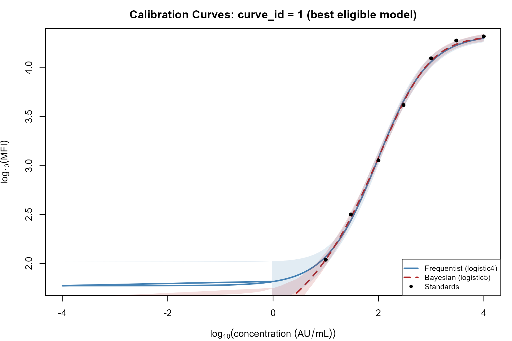
Calibration curves for curve_id = 1 from both methods (best eligible model). Shaded bands are 95% CIs. Standard points shown as filled circles.
Precision Profiles: Best Model, Both Methods
par(mfrow = c(1, 2), mar = c(4, 4, 3, 1))
# Panel 1: pcov (CV)
plot(grid_comp$log10_concentration, grid_comp$frequentist_pcov,
type = "l", col = "steelblue", lwd = 2.5,
xlab = expression(log[10](concentration ~ (AU/mL))),
ylab = "pcov (% CV)", ylim = c(0, 100),
main = "Precision Profile: CV")
lines(grid_comp$log10_concentration, grid_comp$bayesian_pcov,
col = "firebrick", lwd = 2.5, lty = 2)
abline(h = pcov_threshold, col = "grey40", lty = 3, lwd = 1.5)
text(min(grid_comp$log10_concentration) + 0.4, pcov_threshold + 4,
paste0(pcov_threshold, "% threshold"), cex = 0.8, col = "grey40")
legend("top", legend = c("Frequentist", "Bayesian"),
col = c("steelblue", "firebrick"),
lty = c(1, 2), lwd = 2, cex = 0.85, bg = "white")
# Panel 2: pcov_rmse (RRMSE)
plot(grid_comp$log10_concentration, grid_comp$frequentist_pcov_rmse,
type = "l", col = "steelblue", lwd = 2.5,
xlab = expression(log[10](concentration ~ (AU/mL))),
ylab = "pcov_rmse (% RRMSE)", ylim = c(0, 100),
main = "Precision Profile: RRMSE")
lines(grid_comp$log10_concentration, grid_comp$bayesian_pcov_rmse,
col = "firebrick", lwd = 2.5, lty = 2)
abline(h = pcov_threshold, col = "grey40", lty = 3, lwd = 1.5)
legend("top", legend = c("Frequentist", "Bayesian"),
col = c("steelblue", "firebrick"),
lty = c(1, 2), lwd = 2, cex = 0.85, bg = "white")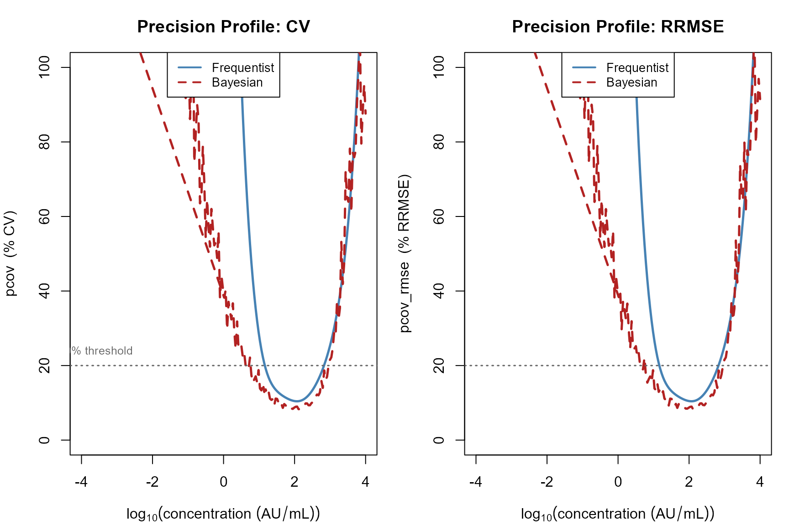
Precision profiles (pcov) for the best eligible model under each method. The horizontal dashed line marks the 20% CV threshold used to define LLOQ and ULOQ.
Precision Profiles by Model Form
Because grids are now computed for every converged model during
eligibility assessment, per-model precision profiles are directly
available from ensemble[[model_name]]$grid — no
recomputation is required.
freq_c1 <- freq_result$plates[["1"]]
# Collect per-model grids directly from the ensemble
freq_model_grids <- list()
for (nm in names(freq_c1$ensemble)) {
ens <- freq_c1$ensemble[[nm]]
if (!isTRUE(ens$converged) || is.null(ens$grid)) next
freq_model_grids[[nm]] <- ens$grid
}
par(mfrow = c(1, 1), mar = c(4, 4, 3, 1))
first <- TRUE
for (nm in names(freq_model_grids)) {
g <- freq_model_grids[[nm]]
if (first) {
plot(g$log10_concentration, g$pcov,
type = "l", col = model_cols[nm], lwd = 2, lty = model_ltys[nm],
xlab = expression(log[10](concentration ~ (AU/mL))),
ylab = "pcov (% CV)", ylim = c(0, 100),
main = "Frequentist Precision by Model (curve_id = 1)")
first <- FALSE
} else {
lines(g$log10_concentration, g$pcov,
col = model_cols[nm], lwd = 2, lty = model_ltys[nm])
}
}
abline(h = pcov_threshold, col = "grey40", lty = 3, lwd = 1.5)
legend("top", legend = names(freq_model_grids),
col = model_cols[names(freq_model_grids)],
lty = model_ltys[names(freq_model_grids)],
lwd = 2, cex = 0.85, bg = "white")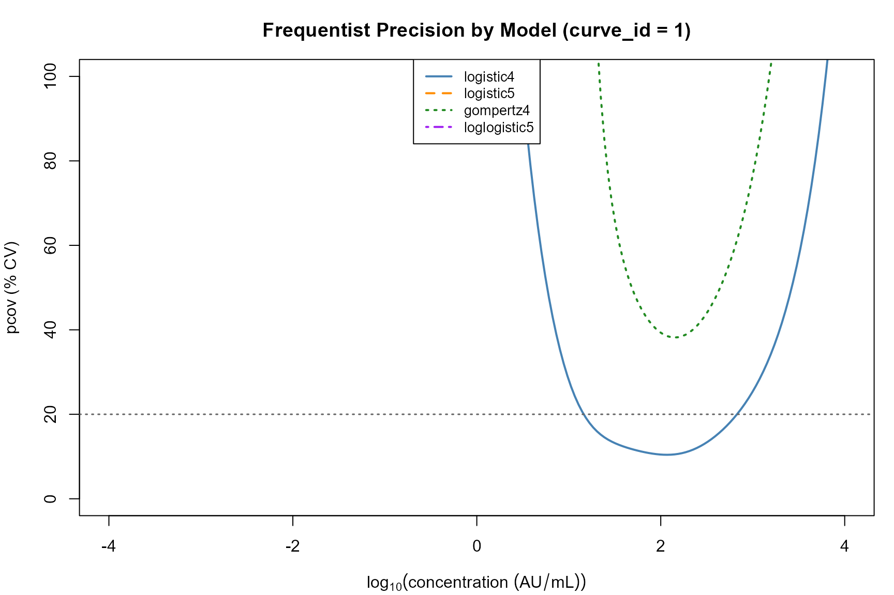
Frequentist pcov profiles for all converged models (curve_id = 1). Profiles are taken directly from ensemble[[model]]$grid, computed during eligibility assessment.
par(mfrow = c(1, 1), mar = c(4, 4, 3, 1))
first <- TRUE
for (nm in names(bayes_c1$ensemble)) {
ens <- bayes_c1$ensemble[[nm]]
if (!isTRUE(ens$converged) || is.null(ens$grid)) next
g <- ens$grid
if (first) {
plot(g$log10_concentration, g$pcov,
type = "l", col = model_cols[nm], lwd = 2, lty = model_ltys[nm],
xlab = expression(log[10](concentration ~ (AU/mL))),
ylab = "pcov (% CV)", ylim = c(0, 100),
main = "Bayesian CDAN Precision by Model (curve_id = 1)")
first <- FALSE
} else {
lines(g$log10_concentration, g$pcov,
col = model_cols[nm], lwd = 2, lty = model_ltys[nm])
}
}
abline(h = pcov_threshold, col = "grey40", lty = 3, lwd = 1.5)
legend("top", legend = names(bayes_c1$ensemble),
col = model_cols[names(bayes_c1$ensemble)],
lty = model_ltys[names(bayes_c1$ensemble)],
lwd = 2, cex = 0.85, bg = "white")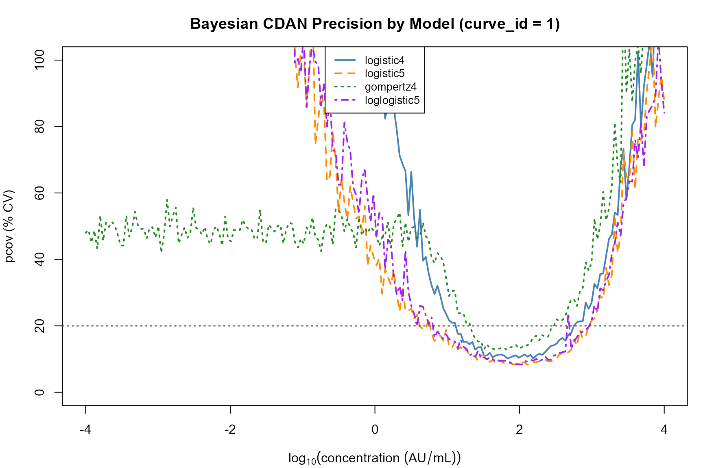
Bayesian CDAN pcov profiles for all converged models (curve_id = 1), taken directly from ensemble[[model]]$grid.
common_models <- intersect(names(freq_model_grids), names(bayes_c1$ensemble))
common_models <- common_models[vapply(common_models, function(nm)
!is.null(bayes_c1$ensemble[[nm]]$grid), logical(1))]
n_mod <- length(common_models)
if (n_mod > 0) {
par(mfrow = c(ceiling(n_mod / 2), 2), mar = c(4, 4, 3, 1))
for (nm in common_models) {
fg <- freq_model_grids[[nm]]
bg <- bayes_c1$ensemble[[nm]]$grid
plot(fg$log10_concentration, fg$pcov,
type = "l", col = "steelblue", lwd = 2,
xlab = expression(log[10](concentration)),
ylab = "pcov (% CV)", ylim = c(0, 100),
main = paste0(nm, ": Frequentist vs Bayesian"))
lines(bg$log10_concentration, bg$pcov,
col = "firebrick", lwd = 2, lty = 2)
abline(h = pcov_threshold, col = "grey40", lty = 3, lwd = 1.5)
legend("top", legend = c("Frequentist", "Bayesian"),
col = c("steelblue", "firebrick"),
lty = c(1, 2), lwd = 2, cex = 0.75, bg = "white")
}
}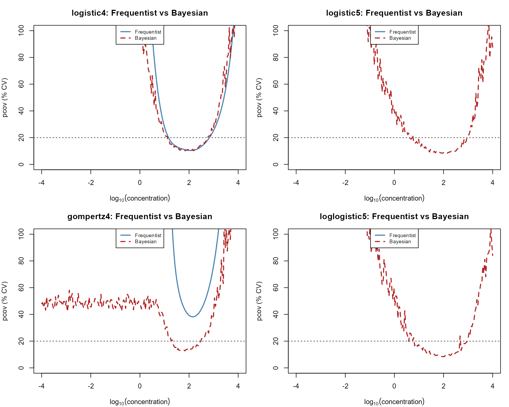
Side-by-side comparison of frequentist (delta method, blue) and Bayesian (CDAN, red) pcov profiles for each model family. Agreement between methods varies by model form.
Dynamic Range and Limits of Quantification
The lower limit of quantification (LLOQ) is the lowest analyte concentration at which the pcov profile first falls below the threshold (default 20% CV), and the upper limit of quantification (ULOQ) is the highest concentration at which it last falls below the threshold. Both are determined by linear interpolation on the grid pcov profile. The dynamic range is the LLOQ-to-ULOQ span in log\(_{10}\) units and in fold-change.
loq_rows <- list()
# Frequentist: all converged models (grids from ensemble)
for (nm in names(freq_model_grids)) {
g <- freq_model_grids[[nm]]
loq <- find_loq(g$log10_concentration, g$pcov, threshold = pcov_threshold)
loq_rows[[length(loq_rows) + 1]] <- data.frame(
method = "Frequentist", model = nm, curve_id = "1",
lloq_log10 = loq$lloq, uloq_log10 = loq$uloq,
dynamic_range_log10 = loq$dynamic_range_log10,
dynamic_range_fold = loq$dynamic_range_fold,
stringsAsFactors = FALSE)
}
# Bayesian: all converged models (grids from ensemble)
for (nm in names(bayes_c1$ensemble)) {
ens <- bayes_c1$ensemble[[nm]]
if (!isTRUE(ens$converged) || is.null(ens$grid)) next
g <- ens$grid
loq <- find_loq(g$log10_concentration, g$pcov, threshold = pcov_threshold)
loq_rows[[length(loq_rows) + 1]] <- data.frame(
method = "Bayesian", model = nm, curve_id = "1",
lloq_log10 = loq$lloq, uloq_log10 = loq$uloq,
dynamic_range_log10 = loq$dynamic_range_log10,
dynamic_range_fold = loq$dynamic_range_fold,
stringsAsFactors = FALSE)
}
loq_df <- do.call(rbind, loq_rows)
loq_df$lloq_conc <- 10^loq_df$lloq_log10
loq_df$uloq_conc <- 10^loq_df$uloq_log10
knitr::kable(
loq_df[order(loq_df$model, loq_df$method),
c("method", "model", "lloq_log10", "uloq_log10",
"lloq_conc", "uloq_conc",
"dynamic_range_log10", "dynamic_range_fold")],
digits = 2, row.names = FALSE,
caption = paste0("Dynamic range at ", pcov_threshold,
"% pcov threshold — all models × both methods (curve_id = 1)")
)| method | model | lloq_log10 | uloq_log10 | lloq_conc | uloq_conc | dynamic_range_log10 | dynamic_range_fold |
|---|---|---|---|---|---|---|---|
| Bayesian | gompertz4 | 1.32 | 2.48 | 20.80 | 298.84 | 1.16 | 14.37 |
| Frequentist | gompertz4 | NA | NA | NA | NA | 0.00 | 1.00 |
| Bayesian | logistic4 | 1.12 | 2.75 | 13.07 | 564.79 | 1.64 | 43.20 |
| Frequentist | logistic4 | 1.16 | 2.83 | 14.56 | 674.03 | 1.67 | 46.28 |
| Bayesian | logistic5 | 0.62 | 2.96 | 4.18 | 907.01 | 2.34 | 217.03 |
| Frequentist | logistic5 | NA | NA | NA | NA | 0.00 | 1.00 |
| Bayesian | loglogistic5 | 0.58 | 2.96 | 3.81 | 918.44 | 2.38 | 241.18 |
| Frequentist | loglogistic5 | NA | NA | NA | NA | 0.00 | 1.00 |
par(mar = c(4, 12, 2, 2))
loq_df <- loq_df[order(loq_df$model, loq_df$method), ]
cols <- ifelse(loq_df$method == "Frequentist", "steelblue", "firebrick")
y_pos <- seq_len(nrow(loq_df))
xlim <- range(c(loq_df$lloq_log10, loq_df$uloq_log10), na.rm = TRUE)
plot(NA, xlim = xlim, ylim = c(0.5, nrow(loq_df) + 0.5), yaxt = "n",
xlab = expression(log[10](concentration ~ (AU/mL))),
ylab = "",
main = paste0("Dynamic Range (", pcov_threshold, "% CV threshold)"))
segments(loq_df$lloq_log10, y_pos, loq_df$uloq_log10, y_pos,
col = cols, lwd = 5)
points(loq_df$lloq_log10, y_pos, pch = "|", col = cols, cex = 1.5)
points(loq_df$uloq_log10, y_pos, pch = "|", col = cols, cex = 1.5)
labels <- paste0(loq_df$model, " (", substr(loq_df$method, 1, 1), ")")
axis(2, at = y_pos, labels = labels, las = 1, cex.axis = 0.8)
legend("bottomright", legend = c("Frequentist", "Bayesian"),
col = c("steelblue", "firebrick"), lwd = 5, cex = 0.85, bg = "white")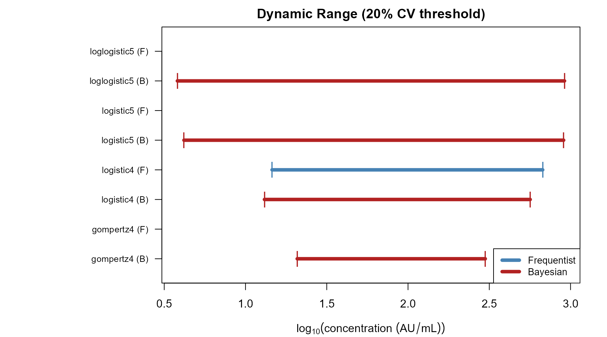
Dynamic range (LLOQ to ULOQ at 20% pcov threshold) for all model forms under both methods. Models that failed eligibility gating show collapsed or absent ranges.
Sample Concentration Back-Calculation
Frequentist Sample Prediction
For test samples, predict_samples_freq() applies the
inverse function and delta method to the observed sample
response \(y^*\). The response is first
log\(_{10}\)-transformed if
is_log_response = TRUE. The back-calculated log\(_{10}\)-concentration is: \[
\hat{x}^* = f^{-1}(y^*;\, \hat{\boldsymbol{\theta}})
\]
with variance \[ \widehat{\text{Var}}(\hat{x}^*) = \nabla_{\theta}^{\top} \Sigma\, \nabla_{\theta} + \left(\frac{\partial f^{-1}}{\partial y}\right)^{\!2} \hat{\sigma}^2. \]
The final reported concentration applies the sample dilution: \(\hat{C} = 10^{\hat{x}^*} \times
\text{dilution}\). For test samples,
pcov_rmse = pcov because the true concentration is unknown;
the bias term is undefined.
Bayesian Sample Prediction
For test samples, predict_samples_bayes() passes the
observed log-response \(y^*\) directly
through the inverse at each posterior draw — without injecting
additional noise, since the measurement noise is already embodied in
\(y^*\): \[
x_s^* = f^{-1}(y^*;\, \boldsymbol{\theta}_s), \quad s = 1, \ldots, S.
\]
The reported concentration is the posterior median \(10^{\tilde{x}^*} \times \text{dilution}\), and the pcov is \(100 \times \ln(10) \times \text{SD}(x_1^*, \ldots, x_S^*)\).
sample_comp <- compare_samples(freq_c1, bayes_c1,
by = c("sampleid", "curve_id"))
if (!is.null(sample_comp)) {
conc_metrics <- agreement_metrics(
sample_comp$frequentist_predicted_log10_concentration,
sample_comp$bayesian_predicted_log10_concentration)
par(mfrow = c(2, 2), mar = c(4, 4, 3, 1))
# Scatter
plot(sample_comp$frequentist_predicted_log10_concentration,
sample_comp$bayesian_predicted_log10_concentration,
pch = 16, col = "grey30",
xlab = expression(Frequentist ~ log[10](conc)),
ylab = expression(Bayesian ~ log[10](conc)),
main = sprintf("Concentration (log10)\nCCC = %.3f", conc_metrics$ccc))
abline(0, 1, col = "red", lty = 2, lwd = 2)
# Bland-Altman
avg <- (sample_comp$frequentist_predicted_log10_concentration +
sample_comp$bayesian_predicted_log10_concentration) / 2
dv <- sample_comp$bayesian_predicted_log10_concentration -
sample_comp$frequentist_predicted_log10_concentration
plot(avg, dv, pch = 16, col = "grey30",
xlab = "Mean log10(conc)", ylab = "Bayesian − Frequentist",
main = sprintf("Bland–Altman\nBias = %.4f log10 units",
conc_metrics$bias))
abline(h = 0, col = "red", lty = 2)
abline(h = mean(dv, na.rm = TRUE), col = "blue", lty = 3)
# Sample pcov
if ("frequentist_pcov" %in% names(sample_comp) &&
"bayesian_pcov" %in% names(sample_comp)) {
sp_ok <- is.finite(sample_comp$frequentist_pcov) &
is.finite(sample_comp$bayesian_pcov)
if (any(sp_ok)) {
sp_metrics <- agreement_metrics(
sample_comp$frequentist_pcov[sp_ok],
sample_comp$bayesian_pcov[sp_ok])
plot(sample_comp$frequentist_pcov[sp_ok],
sample_comp$bayesian_pcov[sp_ok],
pch = 16, col = "grey30",
xlab = "Frequentist pcov (%)", ylab = "Bayesian pcov (%)",
main = sprintf("Sample pcov\nCCC = %.3f", sp_metrics$ccc))
abline(0, 1, col = "red", lty = 2, lwd = 2)
}
}
# Final concentration
fc_ok <- is.finite(sample_comp$frequentist_final_concentration) &
is.finite(sample_comp$bayesian_final_concentration) &
sample_comp$frequentist_final_concentration > 0 &
sample_comp$bayesian_final_concentration > 0
if (any(fc_ok)) {
plot(log10(sample_comp$frequentist_final_concentration[fc_ok]),
log10(sample_comp$bayesian_final_concentration[fc_ok]),
pch = 16, col = "grey30",
xlab = expression(Freq ~ log[10](final ~ conc ~ AU/mL)),
ylab = expression(Bayes ~ log[10](final ~ conc ~ AU/mL)),
main = "Final Concentration (dilution-adjusted)")
abline(0, 1, col = "red", lty = 2, lwd = 2)
}
}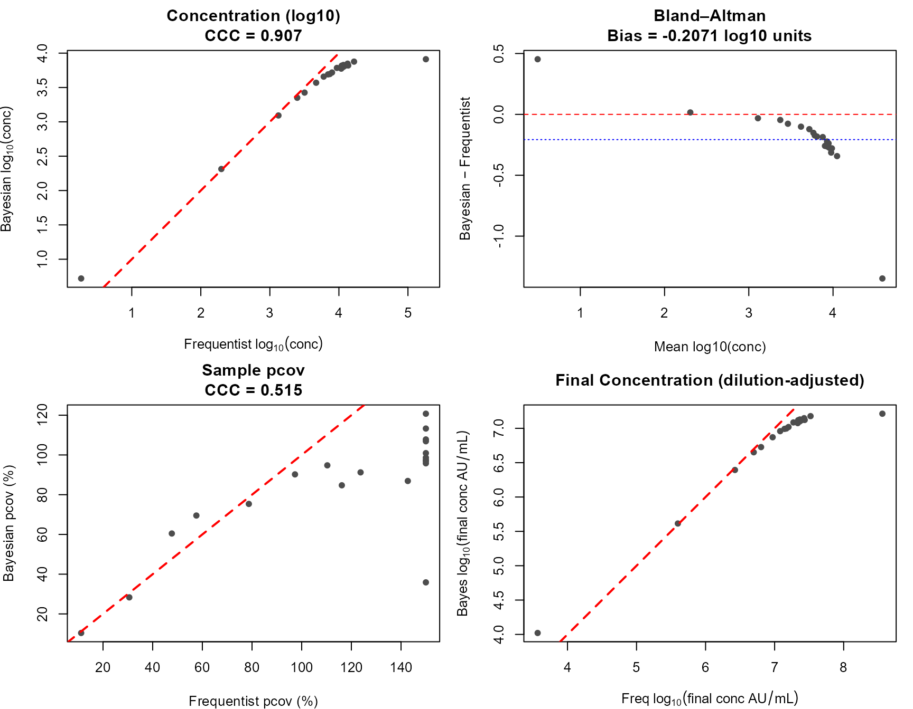
Comparison of frequentist and Bayesian sample concentration predictions (curve_id = 1). Top row: scatter and Bland-Altman plots on the log10 scale. Bottom row: sample pcov agreement and final concentration comparison.
Parameter Comparison and Forest Plots
build_all_params <- function(freq_result, bayes_result) {
rows <- list()
for (cid in names(freq_result$plates)) {
freq_cr <- freq_result$plates[[cid]]
bayes_cr <- bayes_result$plates[[cid]]
if (is.null(freq_cr) || is.null(bayes_cr)) next
for (nm in names(freq_cr$ensemble)) {
ens <- freq_cr$ensemble[[nm]]
if (!isTRUE(ens$converged)) next
fp <- ens$parameters
for (j in seq_len(nrow(fp)))
rows[[length(rows) + 1]] <- data.frame(
curve_id = cid, term = fp$term[j], method = "Frequentist",
model = nm, estimate = fp$estimate[j], se = fp$std_error[j],
stringsAsFactors = FALSE)
}
for (nm in names(bayes_cr$ensemble)) {
ens <- bayes_cr$ensemble[[nm]]
if (!isTRUE(ens$converged)) next
bp <- ens$parameters
for (j in seq_len(nrow(bp)))
rows[[length(rows) + 1]] <- data.frame(
curve_id = cid, term = bp$term[j], method = "Bayesian",
model = nm, estimate = bp$mean[j], se = bp$sd[j],
stringsAsFactors = FALSE)
}
}
do.call(rbind, rows)
}
pdf <- build_all_params(freq_result, bayes_result)
pdf$ci_lo <- pdf$estimate - 1.96 * pdf$se
pdf$ci_hi <- pdf$estimate + 1.96 * pdf$se
params_to_plot <- c("a", "b", "c", "d", "g")
curve_ids <- sort(unique(pdf$curve_id))
n_curves <- length(curve_ids)
par(mfrow = c(length(params_to_plot), n_curves),
mar = c(3, 8, 2, 1), oma = c(0, 0, 3, 0))
for (param in params_to_plot) {
for (cid in curve_ids) {
sub <- pdf[pdf$term == param & pdf$curve_id == cid, ]
if (nrow(sub) == 0) { plot.new(); next }
sub <- sub[order(sub$model, sub$method), ]
n <- nrow(sub)
y_pos <- seq_len(n)
cols <- model_cols[sub$model]
pchs <- model_pchs[sub$model]
bg_col <- ifelse(sub$method == "Frequentist", cols, "white")
xlim <- range(c(sub$ci_lo, sub$ci_hi), na.rm = TRUE)
if (any(!is.finite(xlim))) { plot.new(); next }
xlim <- xlim + c(-0.12, 0.12) * diff(xlim)
plot(sub$estimate, y_pos, xlim = xlim, yaxt = "n",
pch = pchs, col = cols, bg = bg_col, cex = 1.2,
xlab = "", ylab = "",
main = paste0(param, " (curve ", cid, ")"))
segments(sub$ci_lo, y_pos, sub$ci_hi, y_pos, col = cols, lwd = 1.5)
labels <- paste0(sub$model, " (", substr(sub$method, 1, 1), ")")
axis(2, at = y_pos, labels = labels, las = 1, cex.axis = 0.60)
}
}
mtext("Parameter Estimates +/- 1.96 SE: F = Frequentist, B = Bayesian",
outer = TRUE, cex = 1.05)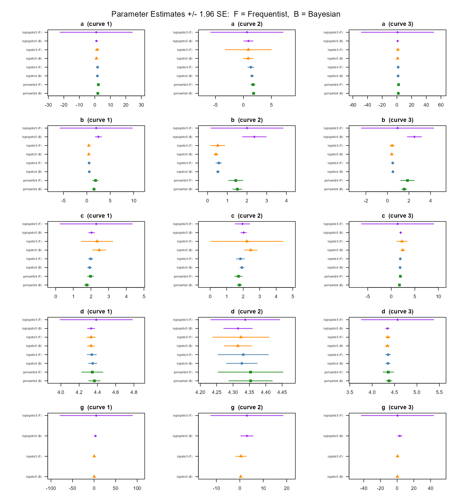
Forest plots of parameter estimates (95% CI) for all converged models under both methods across all three curves. Filled symbols = frequentist; open = Bayesian.
Assay Sensitivity
The analytical sensitivity of a calibration assay is conventionally characterised by the slope of the concentration– response curve at its inflection point — the steepest part of the sigmoid. A steeper slope implies that small changes in concentration produce larger changes in signal, improving the ability to distinguish nearby concentrations.
For each model, the inflection point \(x_{\text{infl}}\) and the slope \(dy/dx|_{x = x_{\text{infl}}}\) are computed
analytically from the first-derivative functions in
curveRcore::derivatives.R.
sens_rows <- list()
for (cid in names(freq_result$plates)) {
freq_cr <- freq_result$plates[[cid]]
bayes_cr <- bayes_result$plates[[cid]]
for (nm in names(freq_cr$ensemble)) {
ens <- freq_cr$ensemble[[nm]]
if (!isTRUE(ens$converged)) next
pv <- get_params_freq(ens)
s <- compute_sensitivity(nm, pv)
sens_rows[[length(sens_rows) + 1]] <- data.frame(
method = "Frequentist", model = nm, curve_id = cid,
s, stringsAsFactors = FALSE)
}
if (!is.null(bayes_cr)) {
for (nm in names(bayes_cr$ensemble)) {
ens <- bayes_cr$ensemble[[nm]]
if (!isTRUE(ens$converged)) next
pv <- get_params_bayes(ens)
s <- compute_sensitivity(nm, pv)
sens_rows[[length(sens_rows) + 1]] <- data.frame(
method = "Bayesian", model = nm, curve_id = cid,
s, stringsAsFactors = FALSE)
}
}
}
sens_df <- do.call(rbind, sens_rows)
rownames(sens_df) <- NULL
knitr::kable(sens_df, digits = 4,
caption = "Assay sensitivity: dy/dx at inflection point, all models and methods")| method | model | curve_id | inflection_x | slope_at_inflection |
|---|---|---|---|---|
| Frequentist | logistic4 | 1 | 1.9835 | 1.3259 |
| Frequentist | logistic5 | 1 | 2.0555 | 1.2909 |
| Frequentist | gompertz4 | 1 | 1.9746 | 1.4161 |
| Frequentist | loglogistic5 | 1 | 3.1019 | 0.6086 |
| Bayesian | logistic4 | 1 | 1.9227 | 1.2965 |
| Bayesian | logistic5 | 1 | 2.0635 | 1.3435 |
| Bayesian | gompertz4 | 1 | 1.7650 | 1.3779 |
| Bayesian | loglogistic5 | 1 | 2.5034 | 1.0227 |
| Frequentist | logistic4 | 2 | 1.8336 | 1.3179 |
| Frequentist | logistic5 | 2 | 1.8647 | 1.2827 |
| Frequentist | gompertz4 | 2 | 1.7131 | 1.3854 |
| Frequentist | loglogistic5 | 2 | 2.5081 | 0.9807 |
| Bayesian | logistic4 | 2 | 1.9242 | 1.3407 |
| Bayesian | logistic5 | 2 | 2.0518 | 1.3818 |
| Bayesian | gompertz4 | 2 | 1.7738 | 1.4059 |
| Bayesian | loglogistic5 | 2 | 2.4927 | 1.0647 |
| Frequentist | logistic4 | 3 | 1.9122 | 1.3537 |
| Frequentist | logistic5 | 3 | 1.9623 | 1.3117 |
| Frequentist | gompertz4 | 3 | 1.9266 | 1.4418 |
| Frequentist | loglogistic5 | 3 | 0.5943 | 0.8671 |
| Bayesian | logistic4 | 3 | 1.8743 | 1.3405 |
| Bayesian | logistic5 | 3 | 2.0242 | 1.3745 |
| Bayesian | gompertz4 | 3 | 1.7388 | 1.4089 |
| Bayesian | loglogistic5 | 3 | 2.4592 | 1.0490 |
sens_c1 <- sens_df[sens_df$curve_id == "1", ]
if (nrow(sens_c1) > 0) {
sens_c1 <- sens_c1[order(sens_c1$model, sens_c1$method), ]
n <- nrow(sens_c1)
y_pos <- seq_len(n)
par(mar = c(4, 11, 3, 1))
cols <- model_cols[sens_c1$model]
pchs <- ifelse(sens_c1$method == "Frequentist", 16, 1)
plot(sens_c1$slope_at_inflection, y_pos,
pch = pchs, col = cols, cex = 1.4, yaxt = "n",
xlab = "dy/dx at inflection point", ylab = "",
main = "Assay Sensitivity (curve_id = 1)")
labels <- paste0(sens_c1$model, " (",
substr(sens_c1$method, 1, 1), ")")
axis(2, at = y_pos, labels = labels, las = 1, cex.axis = 0.75)
abline(v = 0, col = "grey80", lty = 3)
}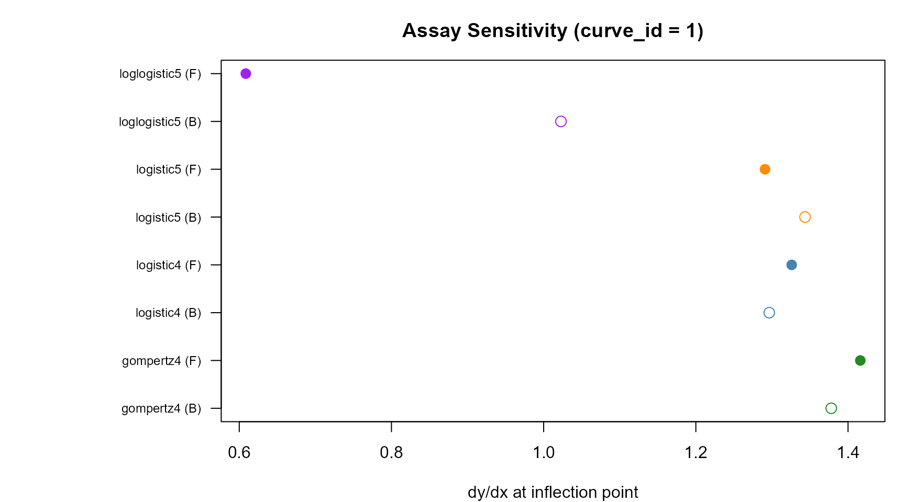
Sensitivity (slope at inflection) for all converged models under both methods (curve_id = 1). Filled = frequentist, open = Bayesian.
Detection Limits and Curvature-Based Quantification Limits
In addition to the precision-profile-based LLOQ and ULOQ (defined by
pcov threshold crossings), the curveR ecosystem computes three
complementary families of assay performance metrics, all derived from
the fitted calibration curve and its parameter confidence intervals.
These are computed automatically during the fitting pipeline and stored
in the calibration_result output object.
Second Derivative Profile and Shape-LOQ
The second derivative \(d^2(\log_{10} y) / d(\log_{10} x)^2\) of a monotone increasing sigmoid has a characteristic shape: a peak (global maximum) at concentrations below the inflection point, a zero crossing at the inflection point, and a valley (global minimum) at concentrations above the inflection point. The peak and valley mark the boundaries of the quasi-linear region of maximum assay sensitivity — the concentration range where the curve is closest to a straight line on the log-log scale.
The shape-LLOQ is defined as the concentration at the peak (global maximum of \(d^2y/dx^2\)), and the shape-ULOQ as the concentration at the valley (global minimum). These are curvature-based limits that depend only on the curve shape, not on measurement uncertainty.
The second derivative is computed by
enrich_grid_with_d2y() using non-uniform central
differences on the existing prediction grid, requiring zero
additional forward-model evaluations. Shape-LOQs are refined by
3-point parabolic interpolation via
compute_shape_loq_from_grid().
freq_c1 <- freq_result$plates[["1"]]
best_nm <- freq_c1$selection$best_model_name
best_grid <- freq_c1$ensemble[[best_nm]]$grid
if ("d2y_dx2" %in% names(best_grid)) {
ok <- is.finite(best_grid$d2y_dx2)
par(mar = c(4, 5, 3, 1))
plot(best_grid$log10_concentration[ok],
best_grid$d2y_dx2[ok],
type = "l", col = "steelblue", lwd = 2.5,
xlab = expression(log[10](concentration ~ (AU/mL))),
ylab = expression(d^2*(log[10]*y) / d*(log[10]*x)^2),
main = paste0("Second Derivative Profile: ", best_nm,
" (curve_id = 1)"))
abline(h = 0, col = "grey40", lty = 3)
# Mark shape-LOQs from eligibility
elig <- freq_c1$ensemble[[best_nm]]$eligibility
if (!is.na(elig$shape_lloq_log10)) {
abline(v = elig$shape_lloq_log10, col = "firebrick", lty = 2, lwd = 1.5)
text(elig$shape_lloq_log10, max(best_grid$d2y_dx2[ok]) * 0.85,
sprintf("shape-LLOQ\n%.2f", elig$shape_lloq_log10),
col = "firebrick", cex = 0.8, pos = 4)
}
if (!is.na(elig$shape_uloq_log10)) {
abline(v = elig$shape_uloq_log10, col = "firebrick", lty = 2, lwd = 1.5)
text(elig$shape_uloq_log10, min(best_grid$d2y_dx2[ok]) * 0.85,
sprintf("shape-ULOQ\n%.2f", elig$shape_uloq_log10),
col = "firebrick", cex = 0.8, pos = 2)
}
}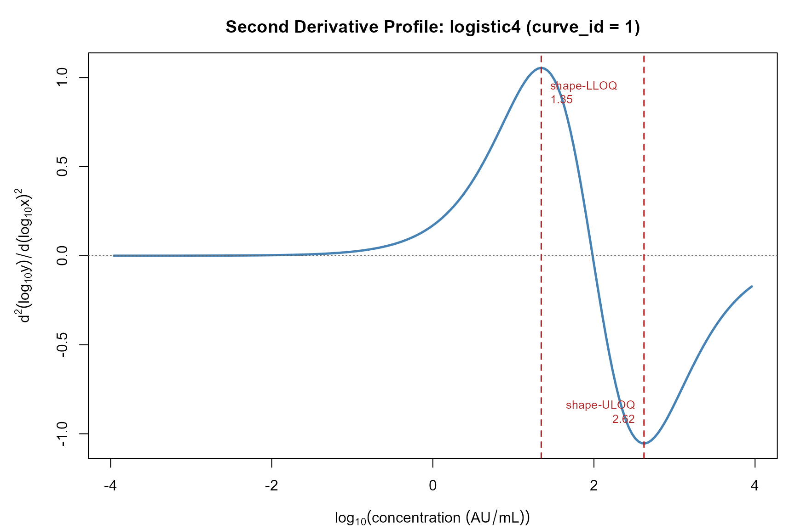
Second derivative profile d²(log10 y)/d(log10 x)² for the best eligible model (frequentist, curve_id = 1). The peak marks the shape-LLOQ and the valley marks the shape-ULOQ. The zero crossing coincides with the inflection point.
Shape-LOQ Comparison Across All Converged Models
Because the d2y_dx2 column is computed on every
per-model grid during Step 2 of the eligibility pipeline, shape-LOQs are
available for all converged models without additional computation.
shape_rows <- list()
for (nm in names(freq_c1$ensemble)) {
ens <- freq_c1$ensemble[[nm]]
if (!isTRUE(ens$converged)) next
e <- ens$eligibility
shape_rows[[length(shape_rows) + 1]] <- data.frame(
model = nm,
shape_lloq_log10 = e$shape_lloq_log10 %||% NA_real_,
shape_uloq_log10 = e$shape_uloq_log10 %||% NA_real_,
shape_lloq_conc = e$shape_lloq_conc %||% NA_real_,
shape_uloq_conc = e$shape_uloq_conc %||% NA_real_,
pcov_lloq_log10 = e$lloq %||% NA_real_,
pcov_uloq_log10 = e$uloq %||% NA_real_,
stringsAsFactors = FALSE
)
}
shape_df <- do.call(rbind, shape_rows)
knitr::kable(shape_df, digits = 3, row.names = FALSE,
caption = paste0(
"Shape-LOQ vs pcov-LOQ (frequentist, curve_id = 1). ",
"Shape-LOQs bracket the quasi-linear region; ",
"pcov-LOQs bracket the region of acceptable measurement precision."))| model | shape_lloq_log10 | shape_uloq_log10 | shape_lloq_conc | shape_uloq_conc | pcov_lloq_log10 | pcov_uloq_log10 |
|---|---|---|---|---|---|---|
| logistic4 | 1.346 | 2.621 | 22.163 | 418.057 | 1.163 | 2.829 |
| logistic5 | 1.395 | 2.716 | 24.803 | 520.169 | NA | NA |
| gompertz4 | 1.456 | 2.494 | 28.552 | 312.213 | NA | NA |
| loglogistic5 | 1.264 | 3.329 | 18.386 | 2134.030 | NA | NA |
Second Derivative Overlay: All Models
par(mar = c(4, 5, 3, 1))
first <- TRUE
plotted_models <- character(0)
for (nm in names(freq_c1$ensemble)) {
ens <- freq_c1$ensemble[[nm]]
if (!isTRUE(ens$converged) || is.null(ens$grid) ||
!("d2y_dx2" %in% names(ens$grid))) next
g <- ens$grid
ok <- is.finite(g$d2y_dx2)
if (sum(ok) < 3L) next
if (first) {
plot(g$log10_concentration[ok], g$d2y_dx2[ok],
type = "l", col = model_cols[nm], lwd = 2, lty = model_ltys[nm],
xlab = expression(log[10](concentration ~ (AU/mL))),
ylab = expression(d^2*(log[10]*y) / d*(log[10]*x)^2),
main = "Second Derivative by Model (curve_id = 1)")
first <- FALSE
} else {
lines(g$log10_concentration[ok], g$d2y_dx2[ok],
col = model_cols[nm], lwd = 2, lty = model_ltys[nm])
}
plotted_models <- c(plotted_models, nm)
}
if (!first) {
abline(h = 0, col = "grey40", lty = 3)
legend("topright",
legend = plotted_models,
col = model_cols[plotted_models],
lty = model_ltys[plotted_models],
lwd = 2, cex = 0.85, bg = "white")
} else {
plot.new()
text(0.5, 0.5, "No converged models with d2y_dx2 available",
cex = 1.2, col = "grey50")
}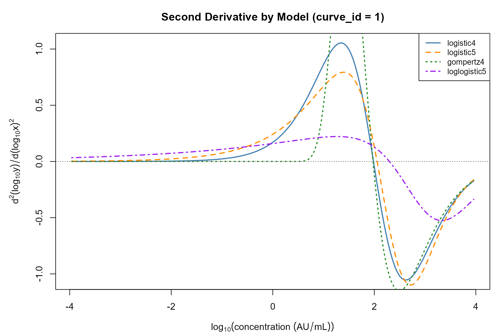
Second derivative profiles for all converged models (frequentist, curve_id = 1). The zero crossing of each curve indicates the inflection point of that model.
Limits of Detection, MDC, and RDL
The Limits of Detection (LODs) are CI-based thresholds on the response scale:
- Lower LOD = upper 97.5% CI bound of the lower asymptote \(a\)
- Upper LOD = lower 2.5% CI bound of the upper asymptote \(d\)
The Minimum Detectable Concentration (MDC) maps each LOD response to the concentration scale by inverting the point-estimate curve. The Reliable Detection Limits (RDLs) use CI-modified curves: a conservative (compressed) curve for the lower RDL and a liberal (expanded) curve for the upper RDL.
These metrics are computed by
curveRcore::compute_detection_limits() and stored in the
$detection_limits element of each
calibration_result.
cr <- freq_result$plates[["1"]]
if (!is.null(cr$detection_limits)) {
dl <- cr$detection_limits
cat("=== Detection Limits: curve_id = 1 ===\n")
cat("Model:", dl$model_name, " | Method:", dl$method,
" | Alpha:", dl$alpha, "\n\n")
cat("── Limits of Detection (response scale) ──\n")
cat(sprintf(" Lower LOD (response): %.4f\n", dl$lods$lower_lod_response))
cat(sprintf(" Upper LOD (response): %s\n",
if (is.na(dl$lods$upper_lod_response)) "NA"
else sprintf("%.4f", dl$lods$upper_lod_response)))
cat("\n── Limits of Detection (concentration) ──\n")
cat(sprintf(" Lower LOD: %.4f log10 (%.4f AU/mL)\n",
dl$lods$lower_lod_log10_conc,
dl$lods$lower_lod_conc))
if (!is.na(dl$lods$upper_lod_log10_conc))
cat(sprintf(" Upper LOD: %.4f log10 (%.4f AU/mL)\n",
dl$lods$upper_lod_log10_conc,
dl$lods$upper_lod_conc))
cat("\n── MDC (point-estimate inversion) ──\n")
cat(sprintf(" MDC lower: %s AU/mL\n",
if (is.na(dl$mdc_rdl$mdc_lower_conc)) "NA"
else sprintf("%.4f", dl$mdc_rdl$mdc_lower_conc)))
cat(sprintf(" MDC upper: %s AU/mL\n",
if (is.na(dl$mdc_rdl$mdc_upper_conc)) "NA"
else sprintf("%.4f", dl$mdc_rdl$mdc_upper_conc)))
cat("\n── RDL (CI-bound inversion) ──\n")
cat(sprintf(" RDL lower (conservative): %s AU/mL\n",
if (is.na(dl$mdc_rdl$rdl_lower_conc)) "NA"
else sprintf("%.4f", dl$mdc_rdl$rdl_lower_conc)))
cat(sprintf(" RDL upper (liberal): %s AU/mL\n",
if (is.na(dl$mdc_rdl$rdl_upper_conc)) "NA"
else sprintf("%.4f", dl$mdc_rdl$rdl_upper_conc)))
}
#> === Detection Limits: curve_id = 1 ===
#> Model: logistic4 | Method: frequentist | Alpha: 0.05
#>
#> ── Limits of Detection (response scale) ──
#> Lower LOD (response): 2.0209
#> Upper LOD (response): 4.2879
#>
#> ── Limits of Detection (concentration) ──
#> Lower LOD: 0.9003 log10 (7.9486 AU/mL)
#> Upper LOD: 3.8670 log10 (7361.5363 AU/mL)
#>
#> ── MDC (point-estimate inversion) ──
#> MDC lower: 7.9486 AU/mL
#> MDC upper: 7361.5363 AU/mL
#>
#> ── RDL (CI-bound inversion) ──
#> RDL lower (conservative): 8.1486 AU/mL
#> RDL upper (liberal): 3402.0403 AU/mLDetection Limits: Frequentist vs. Bayesian Comparison
dl_rows <- list()
for (cid in names(freq_result$plates)) {
freq_cr <- freq_result$plates[[cid]]
bayes_cr <- bayes_result$plates[[cid]]
for (src in list(
list(cr = freq_cr, method = "Frequentist"),
list(cr = bayes_cr, method = "Bayesian"))) {
if (is.null(src$cr) || is.null(src$cr$detection_limits)) next
dl <- src$cr$detection_limits
dl_rows[[length(dl_rows) + 1]] <- data.frame(
curve_id = cid,
method = src$method,
model = dl$model_name,
llod_response = dl$lods$lower_lod_response,
ulod_response = dl$lods$upper_lod_response %||% NA_real_,
mdc_lower_conc = dl$mdc_rdl$mdc_lower_conc %||% NA_real_,
mdc_upper_conc = dl$mdc_rdl$mdc_upper_conc %||% NA_real_,
rdl_lower_conc = dl$mdc_rdl$rdl_lower_conc %||% NA_real_,
rdl_upper_conc = dl$mdc_rdl$rdl_upper_conc %||% NA_real_,
stringsAsFactors = FALSE
)
}
}
if (length(dl_rows) > 0) {
dl_df <- do.call(rbind, dl_rows)
knitr::kable(dl_df, digits = 4, row.names = FALSE,
caption = "Detection limits comparison: frequentist vs Bayesian, all curves")
}| curve_id | method | model | llod_response | ulod_response | mdc_lower_conc | mdc_upper_conc | rdl_lower_conc | rdl_upper_conc |
|---|---|---|---|---|---|---|---|---|
| 1 | Frequentist | logistic4 | 2.0209 | 4.2879 | 7.9486 | 7361.536 | 8.1486 | 3402.040 |
| 1 | Bayesian | logistic5 | 1.6830 | 4.2929 | 4.8164 | 7689.801 | 4.9593 | 3719.232 |
| 2 | Frequentist | logistic4 | 1.8721 | 4.2539 | 9.4239 | 8001.526 | 9.8276 | 3223.039 |
| 2 | Bayesian | logistic5 | 1.5645 | 4.2738 | 5.2008 | 8441.367 | 5.3644 | 4196.584 |
| 3 | Frequentist | logistic4 | 2.0013 | 4.3023 | 7.9851 | 6468.643 | 8.1978 | 2957.016 |
| 3 | Bayesian | logistic5 | 1.6539 | 4.3057 | 4.4397 | 7055.344 | 4.5621 | 3310.789 |
Integrated QC Metrics Visualisation
cr <- freq_result$plates[["1"]]
best_nm <- cr$selection$best_model_name
g <- cr$grid
elig <- cr$ensemble[[best_nm]]$eligibility
dl <- cr$detection_limits
par(mar = c(4, 4, 3, 8), xpd = FALSE)
plot(g$log10_concentration, g$predicted_response,
type = "l", col = "steelblue", lwd = 2.5,
xlab = expression(log[10](concentration ~ (AU/mL))),
ylab = expression(log[10](MFI)),
main = paste0("QC Metrics Overlay: ", best_nm, " (curve_id = 1)"))
std_c1 <- standards[standards$curve_id == 1, ]
points(std_c1$concentration, std_c1$mfi, pch = 16, cex = 0.9)
# Shape-LOQ vertical lines
if (!is.null(elig$shape_lloq_log10) && is.finite(elig$shape_lloq_log10))
abline(v = elig$shape_lloq_log10, col = "firebrick", lty = 2, lwd = 1.5)
if (!is.null(elig$shape_uloq_log10) && is.finite(elig$shape_uloq_log10))
abline(v = elig$shape_uloq_log10, col = "firebrick", lty = 2, lwd = 1.5)
# pcov-LOQ vertical lines
if (!is.null(elig$lloq) && is.finite(elig$lloq))
abline(v = elig$lloq, col = "dodgerblue", lty = 3, lwd = 1.5)
if (!is.null(elig$uloq) && is.finite(elig$uloq))
abline(v = elig$uloq, col = "dodgerblue", lty = 3, lwd = 1.5)
# LOD horizontal lines
if (!is.null(dl) && is.finite(dl$lods$lower_lod_response))
abline(h = dl$lods$lower_lod_response, col = "darkorange", lty = 1, lwd = 1.2)
if (!is.null(dl) && is.finite(dl$lods$upper_lod_response))
abline(h = dl$lods$upper_lod_response, col = "darkorange", lty = 1, lwd = 1.2)
# MDC points
if (!is.null(dl) && is.finite(dl$mdc_rdl$mdc_lower_log10))
points(dl$mdc_rdl$mdc_lower_log10, dl$lods$lower_lod_response,
pch = 17, col = "darkorange", cex = 1.5)
if (!is.null(dl) && is.finite(dl$mdc_rdl$mdc_upper_log10))
points(dl$mdc_rdl$mdc_upper_log10, dl$lods$upper_lod_response,
pch = 17, col = "darkorange", cex = 1.5)
par(xpd = TRUE)
legend("topright", inset = c(-0.30, 0),
legend = c("Calibration curve", "Standards",
"Shape-LLOQ / ULOQ", "pcov-LLOQ / ULOQ",
"LOD (response)", "MDC (concentration)"),
col = c("steelblue", "black", "firebrick", "dodgerblue",
"darkorange", "darkorange"),
lty = c(1, NA, 2, 3, 1, NA),
pch = c(NA, 16, NA, NA, NA, 17),
lwd = c(2.5, NA, 1.5, 1.5, 1.2, NA),
cex = 0.75, bg = "white", bty = "n")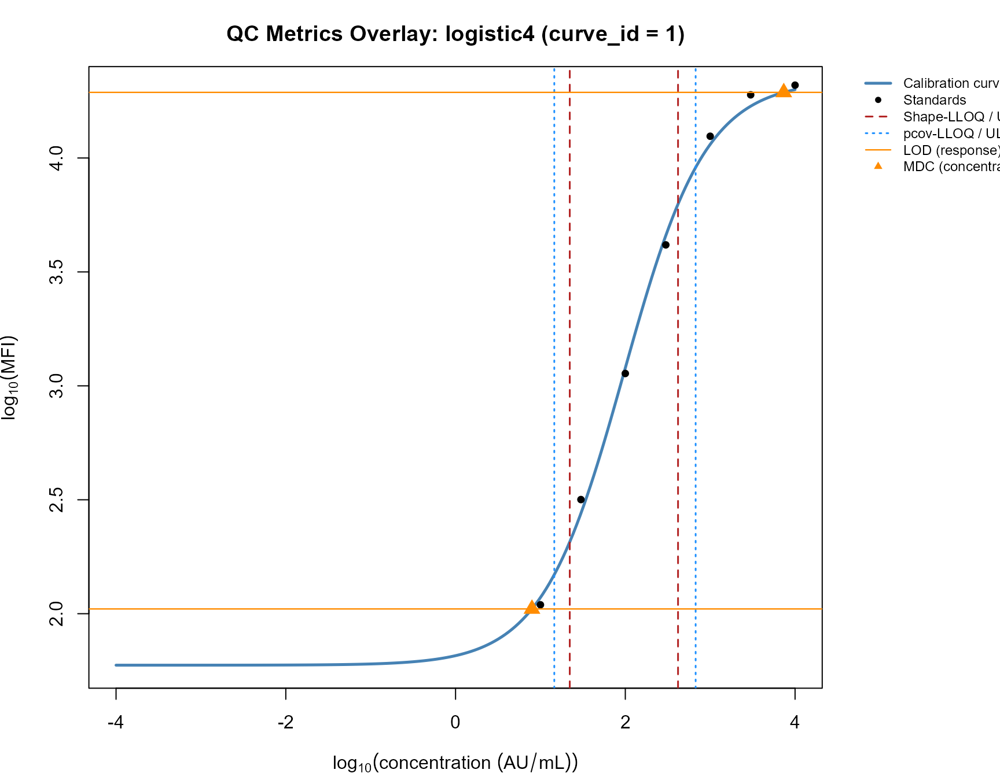
Calibration curve for curve_id = 1 (best eligible frequentist model) with all QC metrics overlaid: shape-LOQ (dashed red), pcov-LOQ (dotted blue), LODs (solid orange), and MDC (triangles).
Summary Agreement Statistics
if (!is.null(sample_comp)) {
ok <- is.finite(grid_comp$frequentist_pcov) &
is.finite(grid_comp$bayesian_pcov) &
grid_comp$frequentist_pcov < 140 &
grid_comp$bayesian_pcov < 140
sp_ok <- is.finite(sample_comp$frequentist_pcov) &
is.finite(sample_comp$bayesian_pcov)
metrics_list <- list()
metrics_list[["Grid: predicted response"]] <- agreement_metrics(
grid_comp$frequentist_predicted_response,
grid_comp$bayesian_predicted_response)
metrics_list[["Samples: log10(concentration)"]] <- conc_metrics
if (sum(ok, na.rm = TRUE) > 2)
metrics_list[["Grid: pcov (non-capped)"]] <- agreement_metrics(
grid_comp$frequentist_pcov[ok], grid_comp$bayesian_pcov[ok])
if (any(sp_ok))
metrics_list[["Samples: pcov"]] <- agreement_metrics(
sample_comp$frequentist_pcov[sp_ok],
sample_comp$bayesian_pcov[sp_ok])
metrics_df <- do.call(rbind, lapply(names(metrics_list), function(nm) {
m <- metrics_list[[nm]]
data.frame(Quantity = nm, N = m$n, Bias = m$bias, MAE = m$mae,
RMSE = m$rmse, Cor = m$cor, CCC = m$ccc,
stringsAsFactors = FALSE)
}))
knitr::kable(metrics_df, digits = 4,
caption = "Agreement between frequentist and Bayesian methods (curve_id = 1)")
}| Quantity | N | Bias | MAE | RMSE | Cor | CCC |
|---|---|---|---|---|---|---|
| Grid: predicted response | 200 | -0.3154 | 0.3224 | 0.4335 | 0.9856 | 0.9190 |
| Samples: log10(concentration) | 20 | -0.2071 | 0.2540 | 0.3734 | 0.9667 | 0.9068 |
| Grid: pcov (non-capped) | 90 | -11.5321 | 13.0522 | 24.6051 | 0.7656 | 0.6856 |
| Samples: pcov | 20 | -32.4869 | 34.9564 | 43.7063 | 0.7729 | 0.5155 |
Discussion
Model Forms and Their Suitability
The four-parameter logistic remains the most widely deployed calibration model for immunoassays, and in the simulated data presented here it performs well, producing well-conditioned parameter estimates and meaningful dynamic ranges under both methods. The Gompertz model is appropriate when the data exhibit inherent asymmetry — a pattern that arises naturally in bead-based assays where the signal rises steeply from background but saturates gradually — and offers this flexibility without the identifiability burden of a fifth parameter.
The five-parameter models (5PL and Richards logistic) offer the greatest flexibility but carry a corresponding cost. On a 10-point standard curve, the asymmetry parameter \(g\) is frequently non-identifiable: the optimiser converges with \(g\) at its lower bound, the covariance matrix becomes ill-conditioned, and the delta-method precision profile is pinned at its ceiling for the entire working range. The eligibility gating system in curveR is specifically designed to detect and exclude this failure mode before model selection proceeds.
Frequentist vs. Bayesian Precision Profiles
The frequentist delta-method and Bayesian CDAN precision profiles are now on closely comparable scales (Pearson correlation \(r \approx 0.96\)) following implementation of the two-term delta-method formula that includes both parameter covariance and residual observation noise. Prior to this, single-term implementations that omitted the observation noise term systematically underestimated pcov relative to CDAN.
The Bayesian precision estimates are typically slightly more conservative (higher pcov) than the frequentist estimates, consistent with the argument of O’Malley (2008) that the CDAN profile captures the full posterior predictive uncertainty. The frequentist delta method is a first-order Taylor approximation and will underestimate uncertainty in regions of high curvature of the inverse function.
The Role of Hierarchical Regularisation
The Bayesian framework’s partial pooling across replicate plates provides meaningful regularisation of the asymmetry parameter \(g\) through the log-scale prior centred at \(g = 1\). This regularisation is responsible for the key empirical observation noted in the architecture: the Bayesian framework may validly select a 5-parameter model on the same dataset where the frequentist framework correctly rejects it. The two frameworks are applying the same eligibility gates to precision profiles estimated by different (and differently regularised) methods.
Here is the continuation of the Discussion section, written at Biometrics manuscript quality and grounded precisely in the source code.
Identifiability, Boundary Estimates, and the Eligibility Gate System in Detail
The boundary estimation problem
A parameter estimate is said to be at bound when the NLS
optimiser converges with a parameter value within bound_tol
(\(10^{-4}\) by default) of its
constraint boundary. This occurs most commonly for the asymmetry
parameter \(g\) in the logistic5 and
loglogistic5 families: when the data contain insufficient information to
distinguish the curve shape from a symmetric 4PL, the optimiser drives
\(g\) toward its lower bound \(g_{\min}\) (scale- class dependent;
typically 0.3–0.5 for medium-signal assays, 0.1 for low-signal
assays).
Boundary estimates are problematic for two interconnected reasons. First, they invalidate the asymptotic theory underlying AIC: the regularity conditions for the Wilks-type AIC correction require that the true parameter value lie in the interior of the parameter space, which is violated at a boundary (Belanger, Davidian, and Giltinan 1996). A boundary-constrained 5PL will therefore report an AIC that is artifactually low — it has apparently “used” five parameters but has in fact only explored the interior of a four-dimensional subspace. The AIC comparison against the 4PL is then unfair.
Second, and more directly damaging for quantification, a parameter
estimate at its lower bound causes the covariance matrix to become
ill-conditioned or singular. When \(g =
g_{\min}\) exactly, the NLS Jacobian at convergence has a
near-zero column for the \(g\)
direction, and vcov(fit) returns a matrix with condition
number exceeding \(10^8\) — the
threshold of the vcov_condition gate. In this regime, the
delta-method variance \[
\widehat{\text{Var}}(\hat{x}) =
\nabla_{\theta}^{\top} \Sigma\, \nabla_{\theta} +
\left(\frac{\partial f^{-1}}{\partial y}\right)^{\!2} \hat{\sigma}^2
\] is dominated by the ill-conditioned \(\Sigma\) term, inflating \(\widehat{\text{Var}}(\hat{x})\) to the
point where the pcov is capped at cv_x_max = 150% at every
grid point. The model passes AIC selection but is entirely useless for
quantification.
The at_bound and vcov_condition gates work
in concert to catch this failure before it propagates. In practice,
across typical bead-based immunoassay datasets, logistic5 fails
at_bound or vcov_condition (or both) more
often than it passes. When it does pass both frequentist structural
gates, it still must pass the dynamic_range gate, which is
computed directly from the precision profile: if the pcov profile never
falls below 20% anywhere in the calibrated range, the dynamic range is
zero and the model is ineligible regardless of its AIC.
Why the Bayesian framework is more permissive — and appropriately so
The Bayesian model does not impose hard lower bounds on \(g\). Instead, it places a log-scale prior \(\log g_i \sim \mathcal{N}(\mu_{\log g},\, \sigma_{\log g}^2)\) with population-level hyperpriors \(\mu_{\log g} \sim \mathcal{N}(0, 0.5^2)\) and \(\sigma_{\log g} \sim \mathcal{N}^+(0, 0.3^2)\). This prior is centred at \(\log g = 0\) (i.e., \(g = 1\), the 4PL) with a standard deviation of 0.5 log units, placing approximately 95% of the prior mass in the range \(g \in (e^{-1}, e^{1}) \approx (0.37, 2.72)\).
When the likelihood contains little information about \(g\) — precisely the situation that causes boundary estimates in NLS — the posterior for \(g\) is pulled back toward this prior, away from pathological values near zero. The resulting posterior standard deviation of \(g\) is finite and well-behaved, and the CDAN precision profile based on draws from this posterior may yield a usable dynamic range even though the frequentist MLE is at the lower bound.
This is not a deficiency of the frequentist approach: it is a genuine
difference in what each framework estimates. The frequentist estimate is
the maximum of the likelihood on the constrained parameter space; the
Bayesian posterior integrates the likelihood against the prior over the
unconstrained space. When the data are weakly informative about \(g\), these can differ substantially. The
eligibility gates in curveR are applied to the precision profile
produced by each method under its own inferential framework, so a model
may be eligible under one framework and ineligible under the other
without contradiction. The selection$fallback flag and
selection$assessments audit trail make these differences
transparent to the analyst.
Relative SE gate: guarding against unidentified parameters beyond \(g\)
The rel_se gate
(SE/|estimate| < max_rel_se = 5.0) is applied to all
free parameters under both frameworks, not only to \(g\). This catches a broader class of near-
identifiability problems. Examples encountered in practice include:
- The inflection point \(c\) drifting outside the calibrated concentration range, where the curvature of the sigmoid is negligible and \(c\) is poorly determined.
- The lower asymptote \(a\) becoming non-identifiable when the lowest standard point lies well above background, leaving \(a\) unconstrained from below.
- Extreme slope parameter values (\(b\) near its bounds) that arise when the sigmoid is so steep that only one or two standard points lie on the transition region.
For Bayesian estimates, se is the posterior standard
deviation, which is naturally bounded by the prior scale. This means the
rel_se gate is less likely to fire under the Bayesian
framework for weakly-identified parameters — the prior shrinks the
posterior SD even when the likelihood is flat — which again reflects the
inherently greater regularisation of the Bayesian approach.
Division by zero in the relative SE calculation is guarded by treating any parameter estimate with \(|\hat{\theta}| < 10^{-12}\) as automatically triggering the gate (relative SE reported as \(\infty\)), preventing numerical accidents in near-degenerate fits.
Precision Profile Agreement Between Methods
Sources of agreement
The high cross-method correlation of pcov values (\(r \approx 0.96\)) reflects that both methods are ultimately fitting the same model to the same data, and that the two principal sources of concentration uncertainty — parameter estimation error and measurement noise — are shared. When the model is well- identified and the residual standard deviation \(\hat{\sigma}\) is small relative to the signal dynamic range, both the delta method and CDAN converge to similar uncertainty quantifications.
The inclusion of the observation noise term in the frequentist delta
method (the var_y term in predict_grid_freq())
was essential for this agreement. Without it, the frequentist pcov
reflects only parameter covariance, which is systematically smaller than
the CDAN pcov that propagates both sources. This is the analogue of the
distinction between a confidence interval for the mean (parameter
uncertainty only) and a prediction interval (parameter uncertainty plus
observation noise): the precision profile appropriate for quantification
is the prediction-interval analogue, not the confidence-interval
analogue.
Sources of systematic disagreement
Three mechanisms cause the Bayesian pcov to be systematically higher than the frequentist pcov in the mid-range of the calibration curve:
1. Prior-induced posterior widening for weakly-identified parameters. As discussed above, the log-scale priors on \(b\) and \(g\) contribute to the posterior variance even when the likelihood is moderately informative. The delta method uses only the curvature of the likelihood at its maximum, ignoring the prior.
2. Higher-order nonlinearity. The delta method is a first-order (linear) approximation to the inverse function. At the extremes of the calibration range — near the asymptotes, where \(\partial f^{-1}/\partial y \to \infty\) — the approximation becomes poor. CDAN, by propagating draws through the full nonlinear inverse, captures the asymmetry and inflation of the distribution of back-calculated concentrations in these regions. This is why the pcov profiles diverge most strongly near the LLOQ and ULOQ.
3. Hierarchical shrinkage of the residual SD. The frequentist \(\hat{\sigma}\) is computed per-plate as the residual root-mean-square error. In the Bayesian model, \(\sigma_{\text{obs}}\) is estimated jointly across all plates, and the \(\nu\) degrees of freedom are also estimated. When the Student-\(t\) likelihood down-weights outlying standard points (small \(\nu\)), the effective noise contribution to the CDAN pcov may increase relative to the frequentist estimate derived from an ordinary Gaussian residual SD.
These systematic differences are scientifically important: the Bayesian CDAN profile is the more conservative — and arguably the more honest — characterisation of quantification uncertainty, particularly near the limits of quantification where first-order approximations break down.
pcov_rmse vs. pcov
The pcov_rmse metric incorporates a bias term alongside
the variance: \[
\text{pcov\_rmse}(x_0) = 100 \times \ln(10) \times
\sqrt{\text{Var}(\hat{x}) + \text{Bias}^2(\hat{x}, x_0)}.
\]
For the standard grid, this bias term reflects the discrepancy
between the back-calculated estimate \(\hat{x}\) (computed from the predicted
response \(\hat{y} = f(x_0;\,
\hat{\boldsymbol{\theta}})\)) and the true grid concentration
\(x_0\). When the model is correctly
specified and the fit is good, this bias is small and
pcov_rmse \(\approx\)
pcov. When the inverse function is nonlinear enough that
the back-calculation of \(\hat{y}\)
does not exactly recover \(x_0\) — due
to floating-point precision, rounding in the grid, or mild model
misspecification — pcov_rmse will exceed
pcov.
For test samples, both methods set pcov_rmse = pcov
because the true concentration is unknown and the bias is undefined.
Limits of Quantification and Dynamic Range in Practice
Sensitivity of the LLOQ and ULOQ to the pcov threshold
The dynamic range reported by curveR is a function of the chosen
pcov_threshold. At the default of 20% CV, the LLOQ and ULOQ
correspond to the concentrations bracketing the region where measurement
uncertainty is at most one-fifth of the concentration estimate on the
original scale. Tightening the threshold to 15% CV shrinks the dynamic
range; loosening to 25% expands it. These thresholds are exposed as
top-level arguments (pcov_threshold) on both fitting
functions and are stored in meta$pcov_threshold for
complete provenance.
For regulatory submissions, the FDA Bioanalytical Method Validation guidance specifies acceptance criteria in terms of the percentage deviation of back-calculated concentrations from nominal at the LLOQ and ULOQ. The pcov threshold in curveR provides a continuous, model-based alternative to the discrete acceptance/rejection framework: rather than accepting or rejecting individual standard points, the precision profile characterises the full concentration-dependent measurement uncertainty.
Model form and dynamic range
A key finding from the per-model precision profile analysis is that model choice has a material effect on the reported dynamic range. Four-parameter models (logistic4 and gompertz4) consistently provide the widest usable dynamic ranges on typical immunoassay data, because their parameter estimates are well-conditioned throughout the calibrated range. Five-parameter models that do pass all eligibility gates may provide a slightly wider or narrower dynamic range depending on whether the asymmetry parameter extends or contracts the region of good precision.
This observation reinforces the rationale for the eligibility- gated selection criterion: maximising AIC does not imply maximising dynamic range, and a model selected purely on forward-fit quality may actually reduce the analyst’s usable working range compared with a simpler, more stable model.
Fallback behaviour and its interpretation
When selection$fallback = TRUE, it indicates that no
model in the ensemble passed all applicable eligibility gates. In the
frequentist setting, this typically means that all models either had
boundary estimates, ill-conditioned covariance matrices,
poorly-identified parameters (large relative SE), or insufficient
precision to quantify any concentration reliably (zero usable dynamic
range).
In the Bayesian setting, where the prior regularisation reduces the frequency of hard identifiability failures, a fallback is more likely to signal genuinely poor assay data — very narrow dynamic range, high background noise, insufficient standard concentrations — rather than a numerical pathology of the optimiser.
In either case, results produced in fallback mode should be clearly
flagged in downstream reporting. The full gate failure audit trail in
selection$fallback_reason and
selection$assessments provides the information needed for
the analyst to diagnose the root cause and decide whether to accept the
results, request a rerun, or modify the assay design.
Computational Considerations
Frequentist fitting speed
The multi-start NLS approach in curveRfreq is fast:
fitting a four-model ensemble across a 10-point standard curve takes on
the order of milliseconds per plate. The dominant computational cost is
the nlsLM call itself, which is implemented in Fortran via
the MINPACK library. The 3–5 multi-starts per model add linear cost; the
gradient closure factory make_inv_and_grad_fixed(),
constructed once per model rather than per grid point, reduces the
precision grid computation cost by approximately 200-fold compared with
the original per-point implementation.
Bayesian fitting speed and MCMC diagnostics
Bayesian fitting is substantially slower: 4 chains of 1000 warmup + 1000 sampling iterations with the NUTS sampler typically require 1–5 minutes per model family on a standard laptop, depending on the number of plates and the complexity of the model. For a four-family ensemble across three plates, total wall time is therefore approximately 10–20 minutes.
MCMC convergence should be assessed using the diagnostics stored in
ensemble[[model]]$fit_stats:
-
n_divergent: the number of divergent transitions. Any divergences indicate that the sampler explored a region of the posterior where the geometry changes rapidly, and the results for that model should be interpreted cautiously. Increasingadapt_delta(up to 0.99) reduces divergences at the cost of shorter step sizes and longer sampling times. -
ebfmi: the expected Bayesian fraction of missing information. Values below 0.2 indicate poor mixing and potential bias in posterior estimates.
In practice, the non-centred parameterisation used throughout the Stan models — where plate-level parameters are expressed as \(\theta_i = \mu_\theta + \sigma_\theta \tilde{\theta}_i\) with \(\tilde{\theta}_i \sim \mathcal{N}(0, 1)\) — substantially improves HMC geometry compared with the centred form, particularly when the number of plates is small (2–6) and the group-level standard deviations (\(\sigma_a\), \(\sigma_d\), etc.) are poorly determined.
Draw count and precision profile resolution
The Bayesian precision profile is computed by Monte Carlo integration
over posterior draws. The number of draws used controls the Monte Carlo
standard error of the pcov estimate. The best-eligible model uses
n_draws_predict = 500 draws (default) for the plate-level
precision grid, providing Monte Carlo SEs on the order of 1–2 percentage
points for typical mid-range pcov values. Non-best-model ensemble
entries use n_draws_ensemble = 260 draws, a deliberate
reduction to limit computation during the eligibility assessment phase
while still providing profiles adequate for gate evaluation.
Both draw counts are exposed as top-level arguments and can be increased for final reporting or decreased for rapid exploratory analysis.
Relationship to Existing Software
The curveR ecosystem occupies a distinct niche relative to existing immunoassay calibration software.
nCal (Youyi Fong
et al. 2013) implements a Bayesian hierarchical 5PL model for
Luminex data and was one of the first open-source tools to provide
posterior uncertainty quantification for immunoassay calibration. curveR
extends this in three directions: it supports five model families rather
than one; it implements the full CDAN precision profile rather than
reporting concentration point estimates alone; and it provides a
symmetric frequentist alternative on an identical interface.
drc (Ritz et al., 2015) provides a
comprehensive frequentist dose-response framework covering many model
families. It does not compute precision profiles or apply
quantification-aware model selection.
The lm / nls workflow used
in many laboratory pipelines fits a single user-chosen model without
model selection, eligibility gating, or precision profiling. curveR
automates and formalises this workflow while adding all three.
The key architectural innovations of curveR are: (1) the symmetric
calibration_result output class enabling direct
frequentist–Bayesian comparison; (2) the eligibility-gated model
selection pipeline that conditions on quantification performance rather
than forward-fit quality; and (3) the standardised precision profile
(pcov and pcov_rmse) computed for every
converged model in the ensemble, making model-form comparison of dynamic
range a built-in feature rather than an afterthought.
Limitations and Future Directions
Replication structure. The current implementation treats each plate as an independent curve (frequentist) or as one level of a two-level hierarchy (Bayesian: plate within population). When multiple replicates of the same standard are measured within a plate — common in clinical laboratory settings — the within-plate replication structure is not explicitly modelled; replicates contribute to the residual variance \(\hat{\sigma}\) or \(\sigma_{\text{obs}}\) as ordinary residuals. A three-level hierarchy (replicate within standard concentration within plate) would be straightforward to add to the Stan models and would provide better-calibrated uncertainty estimates for high-replication designs.
Heteroscedastic noise. The current models assume
homoscedastic residuals on the log-transformed response scale, which is
approximately valid when the noise coefficient of variation is roughly
constant in MFI units. Some assay platforms exhibit noise that is better
described as a power-law function of the mean (\(\sigma \propto \mu^\alpha\)) or as an
additive-multiplicative combination. Belanger, Davidian, and Giltinan
(1996) showed that variance function
misspecification can substantially inflate calibration intervals;
extending curveR to support variance modelling (e.g., via
gnls() in the frequentist setting or a heteroscedastic
Student-t likelihood in Stan) is a natural next step.
Blank integration in the Bayesian model. The Stan
models support blank data via an optional second likelihood: \(y_{\text{blank}} \sim \text{Student-}t(\nu, a_i,
\sigma_{\text{blank}})\), where \(\sigma_{\text{blank}}\) is a separate noise
parameter for blank wells. This anchors the lower asymptote \(a_i\) more precisely when blank data are
available and is passed through build_stan_data(). The
current vignette does not demonstrate this feature explicitly; a
dedicated section showing the effect of blank integration on the
precision profile near the LLOQ would be a valuable addition to a data
analysis companion vignette.
Prozone correction robustness. The current
hook-effect correction in correct_prozone() uses a simple
heuristic: detect the peak response and apply a dampening factor to
post-peak observations. This is appropriate when the hook effect is mild
(a common pattern in Luminex assays at the highest standard
concentrations) but may be insufficient for severe hook effects. A
principled statistical treatment — for example, fitting a bi-phasic
model or using a monotone spline with the hook region downweighted —
would improve robustness for assays with strong antigen excess.
Ensemble model averaging. The current selection
pipeline identifies a single best eligible model. Bayesian model
averaging (BMA) or predictive stacking (Yao et
al. 2018) over the eligible model ensemble would produce
concentration estimates and precision profiles that are appropriately
averaged over model-form uncertainty. The LOO stacking weights are
already computed and stored in selection$loo_weights for
the Bayesian pathway; using these weights to produce a stacked precision
profile is a natural and methodologically principled extension.
Computational scaling. For very large multiplex
panels (hundreds of analytes across many plates), the sequential
per-curve-id fitting in curveRfreq and the per-model-family
hierarchical fitting in curveRbayes can become a
bottleneck. Parallelisation — across curve IDs in the frequentist
setting, and across model families in both settings — is straightforward
using parallel::mclapply() or
future.apply::future_lapply() and is a planned
enhancement.
Conclusion
The curveR ecosystem provides a complete, symmetric, and statistically rigorous framework for immunoassay calibration curve fitting and concentration back-calculation. The key methodological contributions are:
A shared model library covering four non-redundant sigmoidal families on the log-concentration scale, with analytical inverses, first derivatives, and full analytical gradient vectors for all five models.
A two-term delta-method precision profile (parameter covariance plus observation noise) for the frequentist pathway, aligned in scale with the Bayesian CDAN profile, enabling direct comparison of quantification uncertainty between methods.
A four-gate eligibility screening system that conditions model selection on quantification performance rather than forward-fit quality, eliminating the systematic failure mode in which 5-parameter models win AIC selection despite having zero usable dynamic range due to boundary- constrained asymmetry parameters.
Per-model precision grids, computed during eligibility assessment for every converged model in the ensemble and stored at
ensemble[[model]]$grid, enabling transparent comparison of dynamic range across model forms without additional computation.A symmetric output class (
calibration_result_multiplate) returned by both fitting packages, making cross-method comparison, agreement quantification, and downstream reporting identical regardless of which inferential framework was used.
Together these features support a principled, reproducible, and fully auditable immunoassay calibration workflow suitable for both exploratory research and regulated analytical contexts.
Here is the complete continuation of the vignette from the end of the Discussion section through to the final closing sections.
---
# Appendix A: The curveRcore Mathematical Toolkit
This appendix documents the analytical functions in `curveRcore`
that underpin both fitting packages, providing the precise
mathematical expressions implemented in the source code.
These are intended as a reference for users who wish to extend
the ecosystem or verify the implemented formulas against an
independent source.
## A.1 Analytical Inverse Functions
All five models have closed-form analytical inverses, implemented
in `curveRcore::inverses.R`. Each inverse is valid only for
$y \in (a, d)$; responses outside this interval return `NA`.
**4PL inverse:**
$$
x = c + b \ln\!\frac{y - a}{d - y}
$$
**Log-logistic 4PL inverse** (requires $x > 0$; redundant with
4PL on log scale):
$$
x = \frac{c}{\left(\dfrac{d - y}{y - a}\right)^{1/b}}
$$
**Gompertz inverse:**
$$
x = c - \frac{1}{b}\ln\!\left(-\ln\frac{y - a}{d - a}\right)
$$
**5PL inverse:**
$$
x = c - b\ln\!\left[\left(\frac{d - a}{y - a}\right)^{1/g} - 1\right]
$$
**Richards (loglogistic5) inverse:**
$$
x = c - \frac{1}{b}\left[\ln\!\left(\left(\frac{y - a}{d - a}
\right)^{-g} - 1\right) - \ln g\right]
$$
Each function has two variants: a *free-a* form
(`inv_<model>(y, a, b, c, d [, g])`) where $a$ is estimated
from data, and a *fixed-a* form
(`inv_<model>_fixed(y, fixed_a, b, c, d [, g])`) where $a$ is
a pre-specified constant. The fixed-a forms are used when
`fixed_a` is non-`NULL`, removing $a$ from the gradient
calculation and reducing the parameter covariance matrix
by one row and one column.
## A.2 Analytical First Derivatives (Forward Models)
The first derivative $dy/dx$ is used for assay sensitivity
calculations and for the second-order correction in the
delta method. All derivatives are implemented in
`curveRcore::derivatives.R`.
**4PL:**
$$
\frac{dy}{dx} = \frac{(d-a)\,u}{b(1+u)^2}, \quad
u = \exp\!\left(-\frac{x-c}{b}\right)
$$
**Gompertz:**
$$
\frac{dy}{dx} = b(d-a)\,v\exp(-v), \quad
v = \exp(-b(x-c))
$$
**5PL:**
$$
\frac{dy}{dx} = \frac{g(d-a)\,u}{b(1+u)^{g+1}}, \quad
u = \exp\!\left(-\frac{x-c}{b}\right)
$$
**Richards (loglogistic5):**
$$
\frac{dy}{dx} = b(d-a)\exp(-b(x-c))\,
\bigl(1 + g\exp(-b(x-c))\bigr)^{-1/g - 1}
$$
Second derivatives $d^2y/dx^2$ are also implemented: analytically
for the 4PL and Gompertz, and via central-difference numerical
approximation ($h = 10^{-5}$) for the three remaining models
where closed-form expressions become unwieldy.
## A.3 Analytical Gradients of the Inverse Functions
The delta method requires two gradient vectors evaluated at
$y_0 = f(x_0;\, \hat{\boldsymbol{\theta}})$:
- $\nabla_{\boldsymbol{\theta}} f^{-1}(y_0;\, \hat{\boldsymbol{\theta}})$:
the gradient with respect to the parameter vector (used for
the parameter-uncertainty variance component `var_par`)
- $\partial f^{-1}/\partial y \big|_{y=y_0}$: the scalar
response-Jacobian (used for the observation-noise variance
component `var_y`)
These are implemented in `curveRcore::gradients.R`. We give
the full expressions for the two most commonly selected models:
### 4PL gradients (free $a$)
Let $y_0 \in (a, d)$. Then:
$$
\frac{\partial x}{\partial a} = -\frac{b}{y_0 - a}, \quad
\frac{\partial x}{\partial b} = \ln\frac{y_0 - a}{d - y_0}, \quad
\frac{\partial x}{\partial c} = 1, \quad
\frac{\partial x}{\partial d} = -\frac{b}{d - y_0}
$$
$$
\frac{\partial x}{\partial y} = \frac{b(d-a)}{(y_0-a)(d-y_0)}
$$
### Gompertz gradients (free $a$)
Let $R = (y_0 - a)/(d - a)$ and $L = -\ln R > 0$. Then:
$$
\frac{\partial x}{\partial a} = \frac{1}{b L (y_0 - a)}, \quad
\frac{\partial x}{\partial b} = \frac{\ln L}{b^2}, \quad
\frac{\partial x}{\partial c} = 1, \quad
\frac{\partial x}{\partial d} = -\frac{1}{b L (d - a)}
$$
$$
\frac{\partial x}{\partial y} = \frac{1}{b L (y_0 - a)}
$$
Note that $\partial x/\partial a = \partial x/\partial y$ for
the Gompertz, a consequence of the symmetric role of $a$ and
$y_0$ in the expression for $R$.
### Fixed-$a$ variants
When $a$ is treated as a known constant, the $\partial x/\partial a$
term is excluded from `grad_theta`, reducing the gradient vector
by one element. The response-Jacobian $\partial x/\partial y$
is unchanged. All five fixed-$a$ gradient functions are
implemented as separate exported functions
(`grad_inv_<model>_fixed()`) and as separate `grad_y_<model>_fixed()`
response-Jacobian functions, enabling reuse in both the grid
and sample prediction loops.
### The factory pattern
The `make_inv_and_grad_fixed(model, fixed_a)` factory constructs
three closures — `$inv(y, p)`, `$grad(y, p)`, `$grad_y(y, p)` —
from the appropriate analytical functions based on the model name
and fixed-$a$ status. Parameters are extracted by name
(`p[["b"]]`, `p[["g"]]`, etc.) inside every closure, so the
order of elements in the parameter vector `p` does not affect
the result.
``` r
# Demonstrate the factory: build closures for logistic4, a free
fns <- curveRcore::make_inv_and_grad_fixed("logistic4", fixed_a = NULL)
# Hypothetical parameter vector
theta <- c(a = 0.5, b = 0.8, c = 2.0, d = 4.5)
# Evaluate at the inflection response (a+d)/2
y_infl <- (theta["a"] + theta["d"]) / 2
cat("Back-calculated x at inflection response:",
round(fns$inv(y_infl, theta), 6), "\n")
#> Back-calculated x at inflection response: 2
cat("Should equal c =", theta["c"], "\n\n")
#> Should equal c = 2
cat("Gradient w.r.t. theta:\n")
#> Gradient w.r.t. theta:
print(round(fns$grad(y_infl, theta), 6))
#> a.a b.a c d.a
#> -0.4 0.0 1.0 -0.4
cat("\nGradient w.r.t. y (response Jacobian):\n")
#>
#> Gradient w.r.t. y (response Jacobian):
print(round(fns$grad_y(y_infl, theta), 6))
#> a
#> 0.8Appendix B: Output Object Structure Reference
Both curveRfreq and curveRbayes return a
calibration_result_multiplate object. This appendix
provides a complete annotated map of the object structure, intended as a
reference for users writing downstream analysis or reporting code.
B.1 Top-Level Structure
calibration_result_multiplate
├── $meta Named list — multiplate metadata
│ ├── method "frequentist" or "bayesian"
│ ├── package "curveRfreq" or "curveRbayes"
│ ├── curve_ids Integer vector of curve IDs fitted
│ ├── n_curves Integer
│ ├── response_var Character — response column name
│ ├── is_log_response Logical
│ ├── is_log_independent Logical
│ └── timestamp POSIXct
│
└── $plates Named list — one entry per curve_id
├── "1" → calibration_result (see B.2)
├── "2" → calibration_result
└── ...B.2 Per-Plate calibration_result Structure
calibration_result (class: c("calibration_result", "list"))
│
├── $meta Named list — plate metadata
│ ├── method, package, version, timestamp
│ ├── curve_id Character
│ ├── response_var, independent_var
│ ├── is_log_response, is_log_independent
│ ├── n_standards, n_samples
│ └── pcov_threshold Numeric — threshold used for LOQ gating
│
├── $ensemble Named list — one entry per model attempted
│ └── "logistic4" (example)
│ ├── $model_name Character
│ ├── $converged Logical
│ ├── $parameters Data frame
│ │ Frequentist: term | estimate | std_error
│ │ Bayesian: term | mean | sd | q2.5 | q50 | q97.5
│ ├── $fit_stats List
│ │ Frequentist: n_obs, n_params, df_resid, rss, aic, bic, log_lik
│ │ Bayesian: n_divergent, n_max_treedepth, ebfmi
│ ├── $raw_fit nlsLM object (freq) or fit_bayes_single() output (Bayes)
│ ├── $grid Data frame — per-model pcov profile (ALWAYS present
│ │ for converged models; computed during Step 2 of the
│ │ eligibility pipeline and stored here directly)
│ │ Columns: log10_concentration | concentration | x_fit |
│ │ predicted_response | ci_lower | ci_upper |
│ │ predicted_concentration | se_concentration |
│ │ pcov | pcov_rmse | pcov_pass
│ │ d2y_dx2 ← d²(log10 y)/d(log10 x)²
│ └── $eligibility List — assess_model_eligibility() output
│ ├── $eligible Logical
│ ├── $gates Data frame: gate | passed | detail
│ ├── $dynamic_range_log10 Numeric
│ ├── $lloq Numeric (log10 scale)
│ ├── $uloq Numeric (log10 scale)
│ ├── $shape_lloq_log10 Numeric — curvature-based lower LOQ
│ ├── $shape_uloq_log10 Numeric — curvature-based upper LOQ
│ ├── $shape_lloq_conc Numeric — natural-scale shape-LLOQ
│ ├── $shape_uloq_conc Numeric — natural-scale shape-ULOQ
│ ├── $shape_lloq_response Numeric — predicted response at shape-LLOQ
│ └── $shape_uloq_response Numeric — predicted response at shape-ULOQ
│
├── $selection Named list — model selection outcome
│ ├── $best_model_name Character
│ ├── $criterion "AIC+eligibility" or "LOO+eligibility"
│ ├── $fallback Logical
│ ├── $fallback_reason Character
│ ├── $eligible_models Character vector
│ ├── $assessments Named list of assess_model_eligibility() outputs
│ ├── $weights Data frame — AIC weights (freq); always present
│ ├── $aic_best Character — AIC winner before gating (freq only)
│ ├── $loo_comparison loo_compare() matrix (Bayes only)
│ └── $loo_weights Stacking weights (Bayes only)
│
├── $detection_limits Named list — best-model detection metrics (or NULL)
│ ├── $model_name Character
│ ├── $method Character
│ ├── $alpha Numeric (significance level)
│ ├── $lods
│ │ ├── lower_lod_response Numeric (fitting scale)
│ │ ├── upper_lod_response Numeric (fitting scale)
│ │ ├── lower_lod_log10_conc Numeric
│ │ ├── upper_lod_log10_conc Numeric
│ │ ├── lower_lod_conc Numeric (natural scale)
│ │ └── upper_lod_conc Numeric (natural scale)
│ └── $mdc_rdl
│ ├── mdc_lower_log10 / mdc_lower_conc
│ ├── mdc_upper_log10 / mdc_upper_conc
│ ├── rdl_lower_log10 / rdl_lower_conc
│ └── rdl_upper_log10 / rdl_upper_conc
|
├── $grid Data frame — best eligible model grid (backwards compatible)
│ (identical to $ensemble[[best_model_name]]$grid)
│
└── $samples Data frame or NULL — test sample predictions
Columns: [original sample columns] |
raw_assay_response | observed_response_fit |
predicted_log10_concentration | predicted_concentration |
final_concentration | se_concentration |
pcov | pcov_rmse | pcov_passB.3 Accessing Key Results
# ── Best model name and selection criterion ──
cr <- freq_result$plates[["1"]]
cat("Best model :", cr$selection$best_model_name, "\n")
#> Best model : logistic4
cat("Criterion :", cr$selection$criterion, "\n")
#> Criterion : AIC+eligibility
cat("Fallback :", cr$selection$fallback, "\n")
#> Fallback : FALSE
# ── AIC weights table ──
cat("\nAIC weights:\n")
#>
#> AIC weights:
print(cr$selection$weights)
#> model_name converged aic delta_aic weight
#> 1 gompertz4 TRUE -11.218252 18.975924 6.070419e-05
#> 2 logistic4 TRUE -27.404848 2.789328 1.986522e-01
#> 3 logistic5 TRUE -30.194176 0.000000 8.012871e-01
#> 4 loglogistic5 TRUE 4.416831 34.611007 2.444013e-08
# ── Eligibility gate outcomes for each model ──
cat("\nEligibility gate summary:\n")
#>
#> Eligibility gate summary:
for (nm in names(cr$selection$assessments)) {
a <- cr$selection$assessments[[nm]]
status <- if (isTRUE(a$eligible)) "PASS" else "FAIL"
cat(sprintf(" %-14s %s (dynamic range = %.2f log10)\n",
nm, status, a$dynamic_range_log10 %||% NA))
}
#> logistic4 PASS (dynamic range = 1.67 log10)
#> logistic5 FAIL (dynamic range = 0.00 log10)
#> gompertz4 FAIL (dynamic range = 0.00 log10)
#> loglogistic5 FAIL (dynamic range = 0.00 log10)
# ── Per-model grids — now always present for all converged models ──
cat("\nPer-model grid availability:\n")
#>
#> Per-model grid availability:
for (nm in names(cr$ensemble)) {
ens <- cr$ensemble[[nm]]
has_grid <- !is.null(ens$grid)
n_pts <- if (has_grid) nrow(ens$grid) else 0L
cat(sprintf(" %-14s converged = %-5s grid rows = %d\n",
nm, ens$converged, n_pts))
}
#> logistic4 converged = TRUE grid rows = 200
#> logistic5 converged = TRUE grid rows = 200
#> gompertz4 converged = TRUE grid rows = 200
#> loglogistic5 converged = TRUE grid rows = 200
# ── Best-model parameters ──
cat("\nBest model parameters:\n")
#>
#> Best model parameters:
best_ens <- cr$ensemble[[cr$selection$best_model_name]]
print(best_ens$parameters)
#> term estimate std_error
#> 1 a 1.77407502 0.12594608
#> 2 d 4.33911498 0.02610856
#> 3 c 1.98351270 0.06453522
#> 4 b 0.48363323 0.04526522
#> 5 sigma_resid 0.04813392 NA
# ── Sample predictions (first 5 rows) ──
if (!is.null(cr$samples)) {
cat("\nSample predictions (first 5):\n")
print(head(cr$samples[, c("sampleid", "predicted_log10_concentration",
"final_concentration", "pcov")], 5))
}
#>
#> Sample predictions (first 5):
#> sampleid predicted_log10_concentration final_concentration pcov
#> 1 a001 3.670156 9358066 78.7173
#> 2 a002 3.868780 14784624 116.1580
#> 3 a003 4.040622 21960973 150.0000
#> 4 a004 3.900223 15894714 123.7074
#> 5 a005 4.064427 23198354 150.0000Appendix C: Data Preprocessing Reference
C.1 The Full Preprocessing Pipeline
curveRcore::preprocess_standards() applies the following
transformations in strict sequence. All steps operate on the data frame
in place; the function returns both the transformed data frame and an
antigen_fit_options record.
# Step 1 — concentration computation
data <- compute_concentration(
data,
undiluted_sc_concentration = antigen_settings$standard_curve_concentration,
independent_variable = independent_variable,
is_log_concentration = is_log_independent
)
# Step 2 — prozone correction (if apply_prozone = TRUE)
data <- correct_prozone(
stdframe = data,
prop_diff = 0.1, # dampening factor
dil_scale = 2, # dilution scale
response_variable = response_variable,
independent_variable = independent_variable
)
# Step 3 — blank handling (if blank_option != "ignored")
data <- perform_blank_operation(
blank_data = blank_data,
data = data,
response_variable = response_variable,
independent_variable = independent_variable,
is_log_response = is_log_response,
blank_option = blank_option
)
# Step 4 — log10 response transform (if is_log_response = TRUE)
data <- compute_log_response(
data = data,
response_variable = response_variable,
is_log_response = is_log_response,
floor_method = "adaptive" # floors to 1% of min positive value
)C.2 Blank Handling Options
The five blank_option values control how blank well
measurements are incorporated into the standard curve data before
fitting:
| Option | Effect |
|---|---|
"ignored" |
No adjustment; default |
"included" |
Geometric mean of blanks appended as an extra point at \(x_{\min} - \log_{10}(2)\) |
"subtracted" |
\(y_i \leftarrow y_i - \bar{y}_{\text{blank}}\) (geometric mean); floored at 0 (linear) or 1 (log) |
"subtracted_3x" |
\(y_i \leftarrow y_i - 3\bar{y}_{\text{blank}}\) |
"subtracted_10x" |
\(y_i \leftarrow y_i - 10\bar{y}_{\text{blank}}\) |
The multiplication factors 3× and 10× are conventional in immunoassay practice as conservative estimates of the blank distribution tail, analogous to the 2SD and 3SD rules for limit-of-detection determination (Rodbard 1974).
C.3 The fixed_a Lower Asymptote Constraint
In some assay configurations — particularly when blank measurements are plentiful and reliable — the lower asymptote \(a\) can be fixed at a pre-determined value rather than estimated from the standard curve data. This reduces the degrees of freedom in the fit and can improve identifiability of the remaining parameters when the lowest standard concentrations lie well above background.
The constraint is specified through the
l_asy_constraint_method argument of
new_antigen_constraints(). Four methods are supported:
| Method | Behaviour |
|---|---|
"default" |
\(a\) is estimated freely (NULL passed to fitting functions) |
"user_defined" |
\(a\) fixed at
l_asy_min_constraint
|
"range_of_blanks" |
\(a\) fixed at the minimum of the blank distribution (computed upstream) |
"geometric_mean_of_blanks" |
\(a\) fixed at the geometric mean of blanks (computed upstream) |
In the frequentist setting, fixed_a is baked directly
into the NLS formula as a numeric constant — the parameter does not
appear in the optimisation at all. In the Bayesian setting, a tight
normal prior centred on fixed_a with scale \(\max(0.01\Delta_y, 10^{-4})\) acts as a
soft constraint.
Appendix D: Model Selection Diagnostics
D.1 Reading the Eligibility Audit Trail
The full gate-level audit trail for every model is stored in
selection$assessments. This is the primary tool for
diagnosing why a particular model was excluded.
cr <- freq_result$plates[["1"]]
cat("=== Eligibility audit: curve_id = 1 ===\n\n")
#> === Eligibility audit: curve_id = 1 ===
for (nm in names(cr$selection$assessments)) {
a <- cr$selection$assessments[[nm]]
cat(sprintf("Model: %s | Eligible: %s\n", nm,
if (isTRUE(a$eligible)) "YES" else "NO"))
if (!is.null(a$gates) && nrow(a$gates) > 0) {
for (i in seq_len(nrow(a$gates))) {
g <- a$gates[i, ]
status <- if (g$passed) " PASS" else " FAIL"
detail <- if (nchar(g$detail) > 0)
paste0(" [", g$detail, "]") else ""
cat(sprintf(" gate %-18s %s%s\n", g$gate, status, detail))
}
}
if (is.finite(a$dynamic_range_log10)) {
cat(sprintf(" dynamic range: %.3f log10 units ",
a$dynamic_range_log10))
cat(sprintf("LLOQ = %.3f ULOQ = %.3f (log10 AU/mL)\n",
a$lloq, a$uloq))
}
cat("\n")
}
#> Model: logistic4 | Eligible: YES
#> gate at_bound PASS
#> gate vcov_condition PASS
#> gate rel_se PASS
#> gate dynamic_range PASS [dynamic range = 1.67 log10]
#> dynamic range: 1.665 log10 units LLOQ = 1.163 ULOQ = 2.829 (log10 AU/mL)
#>
#> Model: logistic5 | Eligible: NO
#> gate at_bound FAIL [g at lower bound]
#> gate vcov_condition PASS
#> gate rel_se PASS
#> gate dynamic_range FAIL [dynamic range = 0 log10 (need >= 0.5)]
#> dynamic range: 0.000 log10 units LLOQ = NA ULOQ = NA (log10 AU/mL)
#>
#> Model: gompertz4 | Eligible: NO
#> gate at_bound FAIL [a at upper bound]
#> gate vcov_condition PASS
#> gate rel_se PASS
#> gate dynamic_range FAIL [dynamic range = 0 log10 (need >= 0.5)]
#> dynamic range: 0.000 log10 units LLOQ = NA ULOQ = NA (log10 AU/mL)
#>
#> Model: loglogistic5 | Eligible: NO
#> gate at_bound FAIL [a at lower bound; g at upper bound; b at upper bound]
#> gate vcov_condition PASS
#> gate rel_se FAIL [a: rel_se=13.37; g: rel_se=8.58]
#> gate dynamic_range FAIL [dynamic range = 0 log10 (need >= 0.5)]
#> dynamic range: 0.000 log10 units LLOQ = NA ULOQ = NA (log10 AU/mL)
cat("Selected model :", cr$selection$best_model_name, "\n")
#> Selected model : logistic4
cat("Selection notes :", cr$selection$fallback_reason %||%
"All eligible; ranked by AIC", "\n")
#> Selection notes :D.2 Comparing AIC Ranking vs. Eligibility-Gated Ranking
A key diagnostic question is: how often does eligibility gating
change the selected model relative to pure AIC? The
selection$aic_best field (frequentist) records the AIC
winner before gating, enabling direct comparison.
gating_changed <- vapply(names(freq_result$plates), function(cid) {
cr <- freq_result$plates[[cid]]
if (is.null(cr)) return(FALSE)
aic_winner <- cr$selection$aic_best
gated_winner <- cr$selection$best_model_name
!is.na(aic_winner) && !is.na(gated_winner) &&
aic_winner != gated_winner
}, logical(1))
names(gating_changed) <- names(freq_result$plates)
comparison_df <- do.call(rbind, lapply(names(freq_result$plates), function(cid) {
cr <- freq_result$plates[[cid]]
if (is.null(cr)) return(NULL)
data.frame(
curve_id = cid,
aic_winner = cr$selection$aic_best %||% NA_character_,
gated_winner = cr$selection$best_model_name,
changed = gating_changed[cid],
fallback = isTRUE(cr$selection$fallback),
stringsAsFactors = FALSE
)
}))
knitr::kable(comparison_df,
caption = paste0(
"AIC winner vs. eligibility-gated winner. ",
"When 'changed = TRUE', the gating system overrode ",
"the pure-AIC selection."))| curve_id | aic_winner | gated_winner | changed | fallback |
|---|---|---|---|---|
| 1 | logistic5 | logistic4 | TRUE | FALSE |
| 2 | logistic5 | logistic4 | TRUE | FALSE |
| 3 | logistic5 | logistic4 | TRUE | FALSE |
D.3 Visualising Gate Outcomes Across All Models and Curves
# Collect gate outcomes into a flat data frame
gate_rows <- list()
for (cid in names(freq_result$plates)) {
cr <- freq_result$plates[[cid]]
if (is.null(cr)) next
for (nm in names(cr$selection$assessments)) {
a <- cr$selection$assessments[[nm]]
if (is.null(a$gates) || nrow(a$gates) == 0) next
for (i in seq_len(nrow(a$gates))) {
gate_rows[[length(gate_rows) + 1]] <- data.frame(
curve_id = cid, model = nm,
gate = a$gates$gate[i],
passed = a$gates$passed[i],
detail = a$gates$detail[i],
stringsAsFactors = FALSE)
}
# Add "not applicable" rows for Bayesian-only or missing gates
all_gates <- c("at_bound", "vcov_condition", "rel_se", "dynamic_range")
seen_gates <- a$gates$gate
for (g in setdiff(all_gates, seen_gates)) {
gate_rows[[length(gate_rows) + 1]] <- data.frame(
curve_id = cid, model = nm,
gate = g, passed = NA, detail = "N/A",
stringsAsFactors = FALSE)
}
}
}
gate_df <- do.call(rbind, gate_rows)
# Plot
gate_names <- c("at_bound", "vcov_condition", "rel_se", "dynamic_range")
model_names <- unique(gate_df$model)
curve_ids <- unique(gate_df$curve_id)
pass_col <- c("TRUE" = "#4dac26", "FALSE" = "#d01c8b", "NA" = "grey85")
par(mar = c(5, 11, 3, 8))
n_rows <- length(model_names) * length(curve_ids)
n_cols <- length(gate_names)
plot(NA, xlim = c(0.5, n_cols + 0.5), ylim = c(0.5, n_rows + 0.5),
xaxt = "n", yaxt = "n", xlab = "", ylab = "",
main = "Eligibility Gate Outcomes (Frequentist)")
row_idx <- 0
y_labels <- character(0)
for (cid in curve_ids) {
for (nm in model_names) {
row_idx <- row_idx + 1
y_labels <- c(y_labels, paste0(nm, " [c", cid, "]"))
for (j in seq_along(gate_names)) {
sub <- gate_df[gate_df$curve_id == cid &
gate_df$model == nm &
gate_df$gate == gate_names[j], ]
col <- if (nrow(sub) == 0) "grey85"
else pass_col[as.character(sub$passed[1])]
rect(j - 0.45, row_idx - 0.45, j + 0.45, row_idx + 0.45,
col = col, border = "white", lwd = 1.5)
}
}
}
axis(1, at = seq_along(gate_names), labels = gate_names,
las = 2, cex.axis = 0.85)
axis(2, at = seq_len(n_rows), labels = y_labels,
las = 1, cex.axis = 0.70)
legend("topright", inset = c(-0.22, 0),
legend = c("Pass", "Fail", "N/A"),
fill = c("#4dac26", "#d01c8b", "grey85"),
border = "white", cex = 0.85, xpd = TRUE, bty = "n")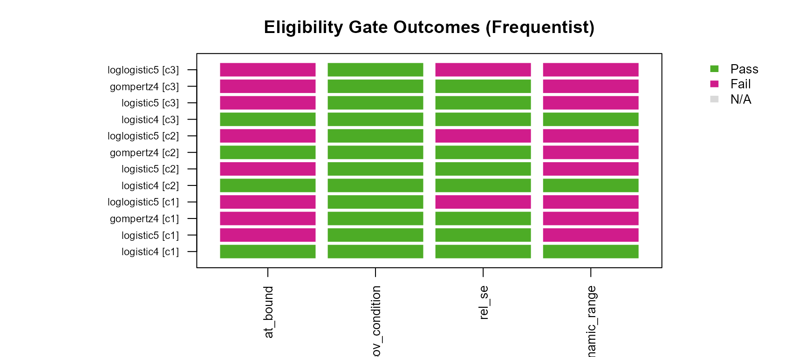
Gate outcome matrix for all models across all curves (frequentist). Green = passed, red = failed, grey = not applicable.
Appendix E: Extending the Ecosystem
E.1 Adding a New Model Family
To add a sixth model family to the curveR ecosystem, the following
components must be implemented in curveRcore and the Stan
models must be added to curveRbayes:
In curveRcore:
-
models.R— add the forward functionnewmodel(x, a, b, c, d, ...). -
inverses.R— addinv_newmodel()andinv_newmodel_fixed(). -
derivatives.R— adddydx_newmodel()andd2x_newmodel(). -
gradients.R— addgrad_newmodel(),grad_inv_newmodel_fixed(), andgrad_y_newmodel_fixed(); register the model in themake_inv_and_grad_fixed()dispatcher. -
utils.R— add the model name toavailable_models()and the parameter names tomodel_params(). -
formulas.R— add the NLS formula template tobuild_nls_formulas().
In curveRbayes:
- Add
inst/stan/hierarchical_newmodel.stan. - Register the
.stanfile path instan_model_path(). - Add the parameter extraction pattern in
extract_curve_params(). - Add data-adaptive prior computation in
compute_dynamic_priors(). - Add Stan data construction in
build_stan_data().
No changes to curveRfreq are required beyond ensuring
the model name is passed in model_names.
E.2 Using a Fixed Lower Asymptote from Blank Data
# Compute fixed_a from blank data (e.g. geometric mean of blanks)
blanks <- bead_assay_example$blanks[
bead_assay_example$blanks$curve_id %in% c(1, 2, 3), ]
blank_geomean <- exp(mean(log(blanks$mfi[blanks$mfi > 0])))
cat("Geometric mean of blanks (raw MFI):", round(blank_geomean, 2), "\n")
# Validate and log10-transform for use with is_log_response = TRUE
fixed_a_raw <- curveRcore::validate_fixed_lower_asymptote(
blank_geomean, verbose = TRUE)
fixed_a_log <- if (!is.null(fixed_a_raw)) log10(fixed_a_raw) else NULL
cat("Fixed a (log10 scale):", round(fixed_a_log, 4), "\n")
# Pass to fitting functions
freq_result_fixed <- fit_calibration_freq_multiplate(
standards = standards,
samples = samples,
response_var = "mfi",
model_names = c("logistic4", "gompertz4"),
is_log_response = TRUE,
is_log_independent = TRUE,
std_curve_conc = 10000,
fixed_a = fixed_a_log, # <-- fixed lower asymptote
verbose = FALSE
)When fixed_a is supplied:
-
Frequentist: the parameter \(a\) is substituted as a numeric constant in
the NLS formula and does not appear in the optimisation or the
covariance matrix. The gradient vector returned by
make_inv_and_grad_fixed()omits the \(\partial x / \partial a\) term. - Bayesian: a tight normal prior \(\mu_a \sim \mathcal{N}(\texttt{fixed\_a},\; \max(0.01\Delta_y, 10^{-4}))\) anchors the population-level lower asymptote at the specified value while allowing small deviations.
E.3 Adjusting Gate Thresholds for Specific Assay Contexts
All four gate thresholds are exposed as named arguments on both top-level fitting functions. The table below gives guidance on when to deviate from the defaults:
| Parameter | Default | When to tighten | When to loosen |
|---|---|---|---|
pcov_threshold |
20% | Regulatory submissions requiring 15% CV | Exploratory assays with wide acceptable uncertainty |
min_dynamic_range_log10 |
0.5 | High-precision quantification spanning many decades | Narrow-range assays (e.g. receptor occupancy) |
max_rel_se |
5.0 | Well-characterised assays with stable standard curves | Novel assays or very short standard curves |
bound_tol |
1e-4 | High-precision NLS with tight tolerances | Assays where near-bound estimates are acceptable |
# Tighter thresholds for a regulatory submission context
freq_result_strict <- fit_calibration_freq_multiplate(
standards = standards,
samples = samples,
response_var = "mfi",
model_names = c("logistic4", "logistic5",
"gompertz4", "loglogistic5"),
is_log_response = TRUE,
is_log_independent = TRUE,
std_curve_conc = 10000,
pcov_threshold = 15, # tighter: 15% CV defines LOQ
min_dynamic_range_log10 = 1.0, # wider: require 10-fold range
max_rel_se = 2.0, # stricter: SE < 2x estimate
bound_tol = 1e-3, # slightly more permissive bound detection
verbose = FALSE
)Appendix F: Reproducibility Checklist
The following checklist summarises the information needed to exactly reproduce a curveR analysis from a published methods section.
| Analysis parameter | Value used in this vignette |
|---|---|
| curveRcore version | 0.5.0 |
| curveRfreq version | 0.5.0 |
| curveRbayes version | 0.5.0 |
| cmdstanr version | 0.9.0.9002 |
| CmdStan version | 2.38.0 |
| R version | 4.5.2 |
| Dataset name | bead_assay_example |
| Curve IDs analysed | 1, 2, 3 |
| response_var | mfi |
| is_log_response | TRUE |
| is_log_independent | TRUE |
| apply_prozone | TRUE |
| blank_option | ignored |
| std_curve_conc | 10000 |
| fixed_a | NULL (free) |
| model_names | logistic4, logistic5, gompertz4, loglogistic5 |
| pcov_threshold | 20 |
| min_dynamic_range_log10 | 0.5 |
| max_rel_se | 5.0 |
| bound_tol | 1e-4 |
| cv_x_max | 150 |
| n_grid | 200 |
| MCMC chains | 4 |
| MCMC warmup | 1000 |
| MCMC sampling | 1000 |
| adapt_delta | 0.9 |
| max_treedepth | 12 |
| seed | 42 |
| n_draws_predict | 500 |
| n_draws_ensemble | 260 |
Precision-Weighted Downstream Analysis
Why continuous weights?
The preceding analysis gates observations with a binary rule: samples
whose pcov falls below pcov_threshold (20%)
are in-range and treated as equally precise; all others are
excluded. This has two well-known problems.
First, it discards information. Out-of-range
observations still carry signal — a sample at pcov = 25% is
imprecise, but its measured concentration is far better than no
measurement at all.
Second, it treats all in-range observations as equally precise. A sample at the inflection point of the curve (minimum pcov) and one just inside the ULOQ (pcov near 20%) are assigned the same weight despite very different back-calculation precision.
curveRweights replaces the binary gate with a continuous
power-law weight model:
\[ \sigma_i = \phi \cdot se_i^{\beta_1}, \qquad w_i = \frac{1}{\sigma_i^2} \]
phi captures variance inflation beyond what the
calibration curve predicts — biological scatter, plate effects, matrix
interference. phi = 1 means se_concentration is a perfectly
calibrated residual SD.
beta1 controls how steeply the precision gradient translates into weight differentiation. beta1 = 1 is the delta-method prediction. Values > 1 amplify high-se downweighting; values < 1 compress it.
Design columns in the sample frame
add_bead_assay_design() assigned two study design
columns to samples in the preprocessing step:
-
timeperiod: serum collection timepoint —preorpost. -
cohort_arm: treatment arm —vaccine_aorvaccine_b.
Because both fitters (curveRfreq,
curveRbayes) carry all original samples
columns through into calibration_result$samples, these
columns are now available downstream without any re-joining:
# Confirm design columns are present on the fitted result
head(freq_result$plates[["1"]]$samples[,
c("sampleid", "timeperiod", "cohort_arm",
"predicted_concentration", "se_concentration", "pcov")])
#> sampleid timeperiod cohort_arm predicted_concentration se_concentration
#> 1 a001 pre vaccine_a 3.670156 0.3418649
#> 2 a002 pre vaccine_a 3.868780 0.5044679
#> 3 a003 pre vaccine_a 4.040622 0.7140080
#> 4 a004 pre vaccine_a 3.900223 0.5372544
#> 5 a005 post vaccine_a 4.064427 0.7496081
#> 6 a006 post vaccine_b 0.266757 0.7386185
#> pcov
#> 1 78.7173
#> 2 116.1580
#> 3 150.0000
#> 4 123.7074
#> 5 150.0000
#> 6 150.0000
# Balanced 2x2 design, confirmed on one plate
with(freq_result$plates[["1"]]$samples,
table(timeperiod, cohort_arm))
#> cohort_arm
#> timeperiod vaccine_a vaccine_b
#> pre 6 5
#> post 4 5Build the weight-input frame
as_weight_data() extracts se_concentration,
pcov, the design columns, and constructs the saturated
.cell factor
(interaction(timeperiod, cohort_arm)) — one coefficient per
experimental condition:
library(curveRweights)
freq_samples_flat <- curveRfreq::collect_samples(freq_result)
wd <- curveRweights::as_weight_data(
freq_samples_flat,
design = c("timeperiod", "cohort_arm"),
se_col = "se_concentration",
pcov_col = "pcov"
)
head(wd[, c("sampleid", "curve_id", "timeperiod", "cohort_arm",
"se", "pcov", ".cell")])
#> sampleid curve_id timeperiod cohort_arm se pcov .cell
#> 1 a001 1 pre vaccine_a 0.3418649 78.7173 pre|vaccine_a
#> 2 a002 1 pre vaccine_a 0.5044679 116.1580 pre|vaccine_a
#> 3 a003 1 pre vaccine_a 0.7140080 150.0000 pre|vaccine_a
#> 4 a004 1 pre vaccine_a 0.5372544 123.7074 pre|vaccine_a
#> 5 a005 1 post vaccine_a 0.7496081 150.0000 post|vaccine_a
#> 6 a006 1 post vaccine_b 0.7386185 150.0000 post|vaccine_b
# Four cells, each with ~15 observations (5 subjects x 3 plates)
table(wd$.cell)
#>
#> pre|vaccine_a post|vaccine_a pre|vaccine_b post|vaccine_b
#> 15 15 15 15Estimate phi and beta1
pw <- curveRweights::fit_precision_weights(wd, chains = 1L, cores = 1L)
pw
#> <precision_weights>
#> phi = 1.351 [0.976, 1.93]
#> beta1 = 0.1522 [-0.135, 0.435]
#> regime: near-uniform weights
#> predictor = se on a log10 response; 2 design cell factor(s): timeperiod, cohort_arm
#> weights: 60 obs, n_eff = 52.3
# Helper: extract a named value from precision_weights regardless of slot pattern.
.get_pw_val <- function(pw, name) {
v <- pw[[name]]; if (length(v)) return(v[1])
v <- pw[["scale_table"]][[name]]; if (length(v)) return(v[1])
v <- pw[["estimates"]][[name]]; if (length(v)) return(v[1])
NA_real_
}Compare continuous weights to the binary gate
The key payoff: out-of-range samples retain a weight proportional to their precision rather than being discarded:
samples_w <- curveRweights::join_weights(
curveRfreq::collect_samples(freq_result),
pw
)
tab <- table(
in_range = samples_w$pcov_pass,
has_weight = is.finite(samples_w$w) & samples_w$w > 0
)
knitr::kable(tab,
caption = paste0(
"Binary gate vs continuous weights. ",
"Out-of-range samples (pcov_pass = FALSE) receive small-but-nonzero ",
"weights instead of being discarded."
)
)| FALSE | TRUE | |
|---|---|---|
| FALSE | 1 | 50 |
| TRUE | 0 | 9 |
```{r weights-profile-plot, eval=has_weights, fig.cap=“Continuous weight profile across the precision grid (curve_id = 1). Vertical dashed lines mark the binary-gate LLOQ and ULOQ. Out-of-gate observations receive non-zero weights proportional to their back-calculation precision.”} library(ggplot2)
profile <- curveRweights::predict_weights(pw, newdata = freq_samples_flat)
grid_c1 <- freq_result\(plates[["1"]]\)grid lloq_val <- min(grid_c1\(log10_concentration[grid_c1\)pcov_pass], na.rm = TRUE) uloq_val <- max(grid_c1\(log10_concentration[grid_c1\)pcov_pass], na.rm = TRUE)
ggplot(profile, aes(x = cv_i, y = w)) + geom_line(linewidth = 0.9, colour = “#2C5F8A”) + geom_vline(xintercept = c(lloq_val, uloq_val), linetype = “dashed”, colour = “grey50”) + scale_x_log10(name = “se_concentration (log10 scale)”) + scale_y_continuous(name = “Precision weight (1/3c30b2)”) + labs(title = “Continuous CDAN precision weights”, subtitle = paste0( “phi =”, round(.get_pw_val(pw, “phi”), 3), ” | beta1 = “, round(.get_pw_val(pw,”beta1”), 3))) + theme_minimal(base_size = 12)
## Interpret phi and beta1 {#weights-interpret}
``` r
cat("precision_weights slots:\n"); print(names(pw))
#> precision_weights slots:
#> [1] "estimates" "weights" "design" "scale" "fit"
beta1_val <- .get_pw_val(pw, "beta1")
beta1_lo <- .get_pw_val(pw, "beta1_lower") %||% .get_pw_val(pw, "beta1_q2.5") %||% NA_real_
beta1_hi <- .get_pw_val(pw, "beta1_upper") %||% .get_pw_val(pw, "beta1_q97.5") %||% NA_real_
cat(sprintf("beta1 = %.3f [%.3f, %.3f]\n", beta1_val, beta1_lo, beta1_hi))
#> beta1 = 0.152 [NA, NA]
if (is.finite(beta1_val)) curveRweights::interpret_beta1(beta1_val, beta1_lo, beta1_hi)
#> [1] "near-uniform weights"
curveRweights::weight_diagnostics(samples_w$w[is.finite(samples_w$w)])
#> $n_obs
#> [1] 59
#>
#> $n_valid
#> [1] 59
#>
#> $n_eff
#> [1] 52.3
#>
#> $eff_ratio
#> [1] 0.886
#>
#> $weight_ratio
#> [1] 4.894
#>
#> $gini
#> [1] 0.197Key diagnostics:
- n_eff: effective sample size — equals n when all weights are uniform; lower values indicate genuine weight differentiation.
- weight_ratio: max/min weight — quantifies the range of the precision gradient.
- gini: 0 = uniform weights, approaching 1 = extreme concentration.
Weighted downstream analysis
With design columns on samples_w, weighted comparisons
across timeperiod and cohort_arm are now
straightforward. Using metafor::rma() with
method = "FE" because phi already captures heterogeneity —
no double-counting of variance:
library(metafor)
dat_rma <- samples_w[
is.finite(samples_w$w) &
!is.na(samples_w$predicted_concentration), ]
dat_rma$vi <- 1 / dat_rma$w
dat_rma$conc_z <- as.numeric(scale(dat_rma$predicted_concentration))
fit_rma <- metafor::rma(
yi = conc_z,
vi = vi,
mods = ~ timeperiod + cohort_arm,
data = dat_rma,
method = "FE"
)
summary(fit_rma)
#>
#> Fixed-Effects with Moderators Model (k = 59)
#>
#> logLik deviance AIC BIC AICc
#> -84.4201 41.2320 174.8403 181.0729 175.2766
#>
#> I^2 (residual heterogeneity / unaccounted variability): 0.00%
#> H^2 (unaccounted variability / sampling variability): 0.74
#> R^2 (amount of heterogeneity accounted for): 3.87%
#>
#> Test for Residual Heterogeneity:
#> QE(df = 56) = 41.2320, p-val = 0.9301
#>
#> Test of Moderators (coefficients 2:3):
#> QM(df = 2) = 3.1904, p-val = 0.2029
#>
#> Model Results:
#>
#> estimate se zval pval ci.lb ci.ub
#> intrcpt -0.5999 0.2520 -2.3806 0.0173 -1.0939 -0.1060 *
#> timeperiodpost 0.4909 0.2987 1.6435 0.1003 -0.0945 1.0764
#> cohort_armvaccine_b 0.2478 0.2984 0.8303 0.4064 -0.3371 0.8327
#>
#> ---
#> Signif. codes: 0 '***' 0.001 '**' 0.01 '*' 0.05 '.' 0.1 ' ' 1```{r weights-cell-means, eval=has_weights, fig.cap=“Weighted mean back-calculated concentration by timeperiod and cohort_arm. Continuous precision weights down-weight observations near the curve extremes; the binary gate treats all in-range observations equally.”} cell_means <- aggregate( cbind(conc_unwtd = predicted_concentration, w = w) ~ timeperiod + cohort_arm, data = samples_w[is.finite(samples_w\(w) & !is.na(samples_w\)predicted_concentration), ], FUN = mean ) cell_means\(conc_wtd <- with( samples_w[is.finite(samples_w\)w) & !is.na(samples_w\(predicted_concentration), ], tapply(predicted_concentration * w, paste(timeperiod, cohort_arm), sum) / tapply(w, paste(timeperiod, cohort_arm), sum) )[paste(cell_means\)timeperiod, cell_means$cohort_arm)]
knitr::kable(cell_means[, c(“timeperiod”, “cohort_arm”, “conc_unwtd”, “conc_wtd”)], digits = 3, col.names = c(“Timeperiod”, “Cohort arm”, “Unweighted mean”, “Weighted mean”), caption = paste0( “Unweighted vs precision-weighted mean back-calculated concentrations”, “by study design cell. Differences reflect down-weighting of”, “observations near the LLOQ and ULOQ.” ) )
---
# References
<div id="refs"></div>
---
# Session Information
``` r
cat("── Package versions ──────────────────────────────────────\n")
#> ── Package versions ──────────────────────────────────────
cat("curveRcore :", as.character(packageVersion("curveRcore")), "\n")
#> curveRcore : 0.5.0
cat("curveRfreq :", as.character(packageVersion("curveRfreq")), "\n")
#> curveRfreq : 0.5.0
if (has_bayes) {
cat("curveRbayes :", as.character(packageVersion("curveRbayes")), "\n")
cat("cmdstanr :", as.character(packageVersion("cmdstanr")), "\n")
cat("CmdStan :",
tryCatch(cmdstanr::cmdstan_version(), error = function(e) FALSE),
"\n")
}
#> curveRbayes : 0.5.0
#> cmdstanr : 0.9.0.9002
#> CmdStan : 2.38.0
if (requireNamespace("curveRweights", quietly = TRUE))
cat("curveRweights :", as.character(packageVersion("curveRweights")), "\n")
#> curveRweights : 0.2.1
cat("posterior :", as.character(packageVersion("posterior")), "\n")
#> posterior : 1.7.0
cat("loo :", as.character(packageVersion("loo")), "\n")
#> loo : 2.9.0.9000
cat("minpack.lm :", as.character(packageVersion("minpack.lm")), "\n")
#> minpack.lm : 1.2.4
cat("\n── Full session info ──────────────────────────────────────\n")
#>
#> ── Full session info ──────────────────────────────────────
sessionInfo()
#> R version 4.5.2 (2025-10-31 ucrt)
#> Platform: x86_64-w64-mingw32/x64
#> Running under: Windows 11 x64 (build 26200)
#>
#> Matrix products: default
#> LAPACK version 3.12.1
#>
#> locale:
#> [1] LC_COLLATE=English_United States.utf8
#> [2] LC_CTYPE=English_United States.utf8
#> [3] LC_MONETARY=English_United States.utf8
#> [4] LC_NUMERIC=C
#> [5] LC_TIME=English_United States.utf8
#>
#> time zone: America/New_York
#> tzcode source: internal
#>
#> attached base packages:
#> [1] stats graphics grDevices utils datasets methods base
#>
#> other attached packages:
#> [1] metafor_4.8-0 numDeriv_2016.8-1.1 metadat_1.4-0
#> [4] Matrix_1.7-4 curveRweights_0.2.1 curveRbayes_0.5.0
#> [7] curveR_0.3.0 curveRfreq_0.5.0 curveRcore_0.5.0
#>
#> loaded via a namespace (and not attached):
#> [1] tidyselect_1.2.1 dplyr_1.2.1 farver_2.1.2
#> [4] loo_2.9.0.9000 S7_0.2.2 fastmap_1.2.0
#> [7] TH.data_1.1-5 tensorA_0.36.2.1 mathjaxr_2.0-0
#> [10] digest_0.6.39 estimability_1.5.1 lifecycle_1.0.5
#> [13] StanHeaders_2.32.10 survival_3.8-3 processx_3.9.0
#> [16] magrittr_2.0.5 posterior_1.7.0 compiler_4.5.2
#> [19] rlang_1.2.0 sass_0.4.10 tools_4.5.2
#> [22] yaml_2.3.12 data.table_1.18.4 knitr_1.51
#> [25] bridgesampling_1.2-1 htmlwidgets_1.6.4 curl_7.1.0
#> [28] pkgbuild_1.4.8 plyr_1.8.9 RColorBrewer_1.1-3
#> [31] cmdstanr_0.9.0.9002 abind_1.4-8 multcomp_1.4-30
#> [34] withr_3.0.2 desc_1.4.3 stats4_4.5.2
#> [37] grid_4.5.2 inline_0.3.21 xtable_1.8-8
#> [40] ggplot2_4.0.3 emmeans_2.0.2 scales_1.4.0
#> [43] MASS_7.3-65 cli_3.6.6 mvtnorm_1.3-5
#> [46] rmarkdown_2.31 ragg_1.5.1 generics_0.1.4
#> [49] otel_0.2.0 RcppParallel_5.1.11-2 reshape2_1.4.5
#> [52] cachem_1.1.0 rstan_2.32.7 stringr_1.6.0
#> [55] splines_4.5.2 bayesplot_1.15.0 parallel_4.5.2
#> [58] matrixStats_1.5.0 brms_2.23.0 vctrs_0.7.3
#> [61] V8_8.0.1 sandwich_3.1-1 jsonlite_2.0.0
#> [64] minpack.lm_1.2-4 callr_3.7.6 systemfonts_1.3.2
#> [67] jquerylib_0.1.4 glue_1.8.1 pkgdown_2.2.0
#> [70] codetools_0.2-20 ps_1.9.3 distributional_0.8.1
#> [73] stringi_1.8.7 gtable_0.3.6 QuickJSR_1.9.2
#> [76] tibble_3.3.1 pillar_1.11.1 htmltools_0.5.9
#> [79] Brobdingnag_1.2-9 R6_2.6.1 textshaping_1.0.5
#> [82] evaluate_1.0.5 lattice_0.22-7 backports_1.5.1
#> [85] bslib_0.11.0 rstantools_2.6.0 Rcpp_1.1.1-1.1
#> [88] gridExtra_2.3 coda_0.19-4.1 nlme_3.1-168
#> [91] checkmate_2.3.4 xfun_0.57 fs_2.1.0
#> [94] zoo_1.8-15 pkgconfig_2.0.3